איך לקרוא את הדף: ההסברים בעברית; מונחים מקצועיים מופיעים באנגלית (כך) כי כך הם מופיעים בבוחן ובספר. מושג שסומן ב-חובה הודגש בקו תחתון ברשימת המושגים של הקורס. קופסאות 📝 נשאל בבוחן מצביעות על שאלה שהופיעה בבוחן הבוקר או בבוחן 1 מהשנה שעברה, וקופסאות ⚠ מלכודת על מסיחים שחוזרים בשאלות.
הדף בנוי כמו ההרצאות: קודם החשמל (למה הלב פועם ומאיפה מתחיל הגירוי), אחר כך המכניקה (מה קובע כמה דם יוצא בכל פעימה), אחר כך כלי הדם (לחץ, זרימה, התנגדות וחילוף חומרים בנימים), ולבסוף הבקרה (איך מערכת העצבים וההורמונים מכוונים את כל זה). לחיצה על תמונה פותחת אותה בגדול.
1. התמונה הגדולה Overview
הלב כמשאבת דחיסה פעימתית
- שתי משאבות בטור באיבר אחד: לב ימין דוחף למחזור הקטן (ריאות), לב שמאל למחזור הגדול. המחיצה מפרידה, המסתמים מבטיחים זרימה חד-כיוונית.
- מסתמי עלייה-חדר: Tricuspid (ימין), Mitral / Bicuspid (שמאל). מסתמי עורקים: Pulmonary ו-Aortic.
- שריר הלב: שריר "איטי", אירובי, עשיר במיטוכונדריה, תלות מוחלטת בחמצן (כלי דם כליליים). Intercalated disks ו-Gap junctions מסנכרנים הולכה וכיווץ – הלב מתפקד כ-functional syncytium.
- הפעילות נקבעת בשלוש רמות: תא (תעלות יונים, סידן), איבר (פרנק-סטרלינג, PV loop), מערכת (כלי דם, רפלקסים, הורמונים).
מספרים שכדאי לזכור
| קצב SA node | ~70 פעימות/דקה (סינוס תקין 60–100) |
| קצב AV node (קוצב משני) | ~50 פעימות/דקה |
| מהירות הולכה: עליות / AVN / SAN | 0.02–0.1 מ'/שנ' (איטי) |
| מהירות הולכה: His–Purkinje | 1–4 מ'/שנ' (מהיר) |
| פוטנציאל מנוחה: תא מהיר / תא איטי | −90 mV / −60 mV (לא יציב) |
| SV במנוחה | ~70 מ"ל (EDV ~120–130, ESV ~50) |
| EF תקין | ~60% (55–70%) |
| CO במנוחה | 5–6 ליטר/דקה; במאמץ עד ~20–25 |
| לחץ עורקי: סיסטולי / דיאסטולי / MAP | 120 / 80 / ~93 mmHg |
| PR תקין / QRS / QTc | 0.12–0.20 ש' / <0.12 ש' / ≤0.40 ש' |
| כוחות סטרלינג (מהמצגת) | Pc: 35 → 15 mmHg לאורך הנימה; πc ≈ 25 mmHg |
| נפח דם בוורידים | ~67% (כלי קיבולת); נימים ~5% |
שלושת המשוואות שמחזיקות את כל היחידה
תפוקת הלב = נפח פעימה × קצב
ו-EF = SV / EDV
ולכן MAP ≈ CO × TPR
כל שאלה ביחידה מתחברת לאחת מהן: מה משנה את SV (preload, afterload, contractility)? מה משנה את HR (קוצב + אוטונומי)? ומה משנה את ההתנגדות (רדיוס העורקיקים בחזקת 4)?
2. התכונות החשמליות של הלב Electrical Properties
השאלה המרכזית של היחידה: איך הלב שומר על אופי פעימתי (ולא כיווץ רציף כמו שריר שלד), ומה קובע את הכיווניות (עליות לפני חדרים)? התשובה: פוטנציאל פעולה ארוך במיוחד עם תקופה רפרקטורית שחופפת לכיווץ, ומערכת הולכה שמפיצה את הגירוי בסדר קבוע.
2.1 מערכת ההולכה: מי מתחיל, מי מעכב, מי מפיץ
SA node (Sinoatrial node) חובה
- בדופן העלייה הימנית ליד כניסת ה-SVC. תאי קוצב "איטיים" עם אוטומטיות: אין להם פוטנציאל מנוחה יציב, הם מתדפלרזים לבד.
- הוא הקוצב הדומיננטי כי הוא המהיר ביותר (~70/דקה) – מי שמגיע לסף ראשון "משתלט" ומאפס את כל השאר (overdrive suppression).
- פועל ללא תלות במערכת העצבים; האוטונומי רק מכוון את הקצב (כרונוטרופיה).
AV node (Atrioventricular node) חובה
- העליות מופרדות מהחדרים ע"י רקמת חיבור צפופה (טבעת פיברוטית) שיוצרת ניתוק חשמלי. ה-AVN הוא המעבר היחיד לגירוי מהעליות לחדרים.
- הולכה איטית (0.02–0.1 מ'/שנ') – יוצרת השהיה (~0.1 ש' = מקטע PR) שמאפשרת לעליות לסיים להתכווץ ולמלא את החדרים לפני שהחדרים מתכווצים.
- קוצב משני (~50/דקה): אם ה-SAN נכשל, ה-AVN מקבל פיקוד. גם מגן על החדרים: בפרפור עליות הוא "מסנן" חלק מהגירויים.
Bundle of His / Purkinje fibers
- רקמת הולכה מתמחה: תאים גדולים, מעט מיופיברילים, הרבה gap junctions – ההולכה המהירה ביותר בלב (1–4 מ'/שנ'; להשוואה שריר שלד 0.3–1).
- המטרה: להפיץ את הגירוי לכל שריר החדרים כמעט בו-זמנית, מהקודקוד (apex) כלפי מעלה – כך הדם נדחף לעבר מסתמי העורקים.
- דה-פולריזציה: מהאנדוקרד לאפיקרד, מהמחיצה לדפנות. רה-פולריזציה: מהדפנות (אפיקרד) למחיצה – ולכן גל T חיובי כמו QRS.
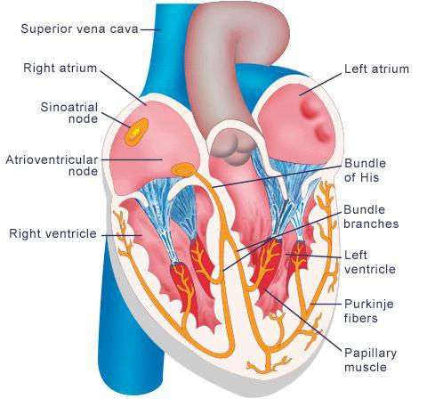
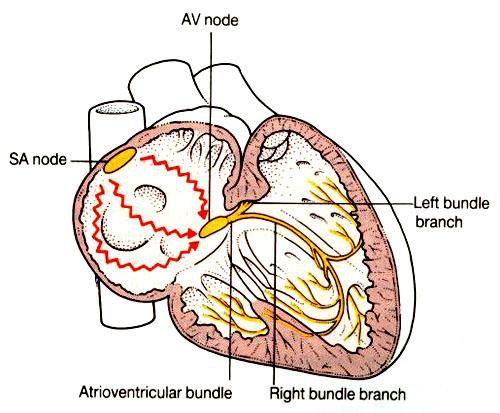
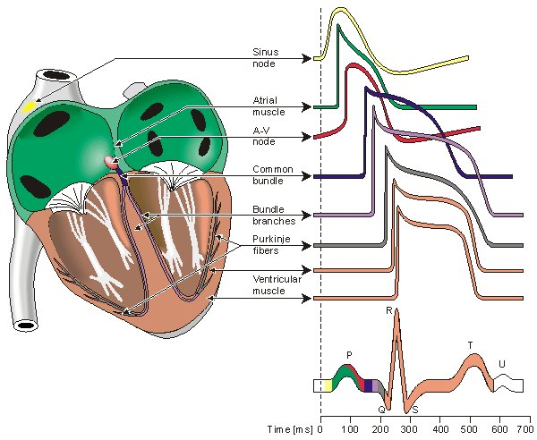
2.2 פוטנציאל פעולה: למה הלב לא יכול להיכנס לטטנוס
ניסוי 1 מההרצאה: שריר שלד מול שריר לב
- שריר שלד: AP קצר מאוד (~2 ms) לעומת הכיווץ (~100 ms) → אפשר לתת סדרת גירויים ולקבל סכימה וטטנוס.
- שריר לב: AP ארוך במיוחד (~250–300 ms) שחופף לכיווץ. התקופה הרפרקטורית נמשכת כמעט עד סוף הכיווץ → אי אפשר לסכם כיווצים; הלב חייב להירפות ולהתמלא בין פעימות.
- מסקנה: ה-AP של הלב "בנוי" כדי לשמור על אופי פעימתי, ולכן יש לו מנגנון תעלות יונים שונה (plateau של סידן).
מושגי יסוד חובה
- Action potential (AP) – שינוי חולף ומתפשט בפוטנציאל הממברנה בתגובה לגירוי שמגיע לסף.
- Depolarization – הפוטנציאל נעשה חיובי יותר (כניסת Na⁺ או Ca²⁺). Repolarization – חזרה לשלילי (יציאת K⁺).
- Overshoot – היפוך הפוטנציאל לערכים חיוביים (+20 mV) בשיא שלב 0.
- תעלות תלויות מתח (Voltage-gated) – נפתחות/נסגרות לפי פוטנציאל הממברנה; לתעלת ה-Na⁺ המהירה יש שני שערים: אקטיבציה (נפתח מהר) ואינאקטיבציה (נסגר ומחזיק את התעלה חסומה עד הרה-פולריזציה).
2.3 תאים מהירים מול תאים איטיים חובה
בלב שני סוגי AP, שני סוגי תאים: תאים "מהירים" (Fast response) – קרדיומיוציטים של העליות והחדרים וסיבי פורקיניה; תאים "איטיים" (Slow response) – תאי הקוצב ב-SAN וב-AVN. ההבדל הוא בתלילות שלב 0 (upstroke) ובמנגנון שלו.


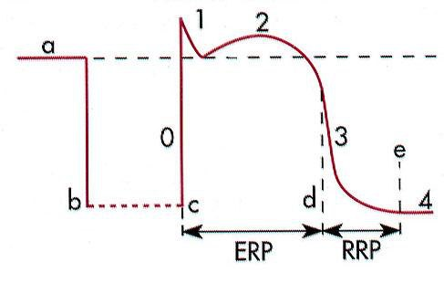
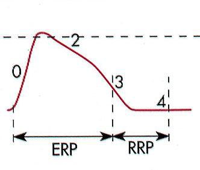
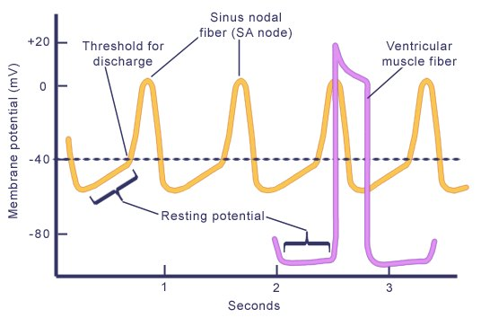
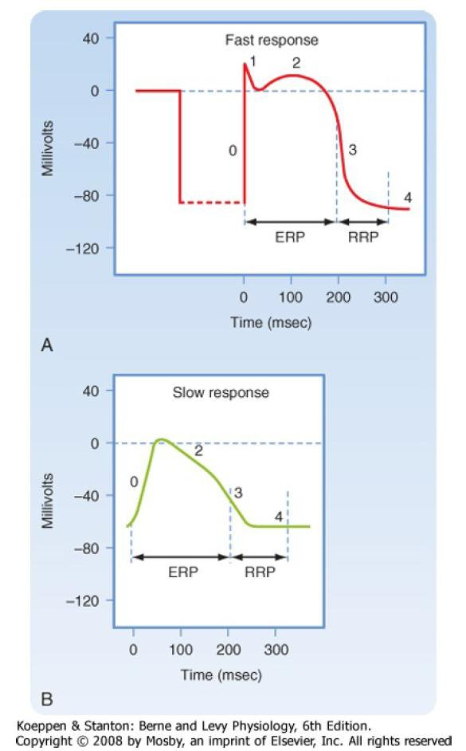
| שלב | תא מהיר (מיוציט / פורקיניה) | תא איטי (SAN / AVN) |
|---|---|---|
| 4 – מנוחה | פוטנציאל מנוחה יציב −90 mV, נקבע ע"י מוליכות K⁺ (IK1). מחכה לגירוי. | לא יציב, מתחיל ב-−60/−65 mV ועולה לאט = Pacemaker potential. מופעל ע"י If (נתרן נכנס) שנפתח בהיפרפולריזציה (~−55 mV), בהמשך תעלות Ca²⁺ מסוג T. IK דועך. |
| 0 – דה-פולריזציה | תלולה: פתיחת תעלות Na⁺ מהירות תלויות מתח (INa), overshoot ל-+20 mV. זהה לעצב. | איטית: אין תעלות Na⁺ מהירות (הן באינאקטיבציה קבועה בפוטנציאל כזה). הדה-פולריזציה ע"י Ca²⁺ דרך תעלות L (ICa). |
| 1 – רה-פול' קצרה | סגירת Na⁺ (אינאקטיבציה) + זרם K⁺ חולף החוצה (Ito, transient outward). | אין שלב 1. |
| 2 – plateau | איזון: Ca²⁺ נכנס (תעלות L) מול K⁺ יוצא (IK). הסידן הזה הוא הטריגר לכיווץ. ה-plateau הוא מה שמאריך את ה-AP ומונע טטנוס. | אין plateau אמיתי. |
| 3 – רה-פולריזציה | אינאקטיבציה של תעלות Ca²⁺; IK > ICa → חזרה ל-−90. | IK גובר על ICa → חזרה ל-−65, ואז If מתחיל מחדש. |
| מהירות הולכה | מהירה (0.3–4 מ'/שנ') | איטית (0.02–0.1 מ'/שנ') – בגלל upstroke איטי |
| תקופה רפרקטורית | ERP עד אמצע שלב 3, RRP עד תחילת שלב 4 | ארוכה במיוחד; RRP נמשך לתוך שלב 4 |
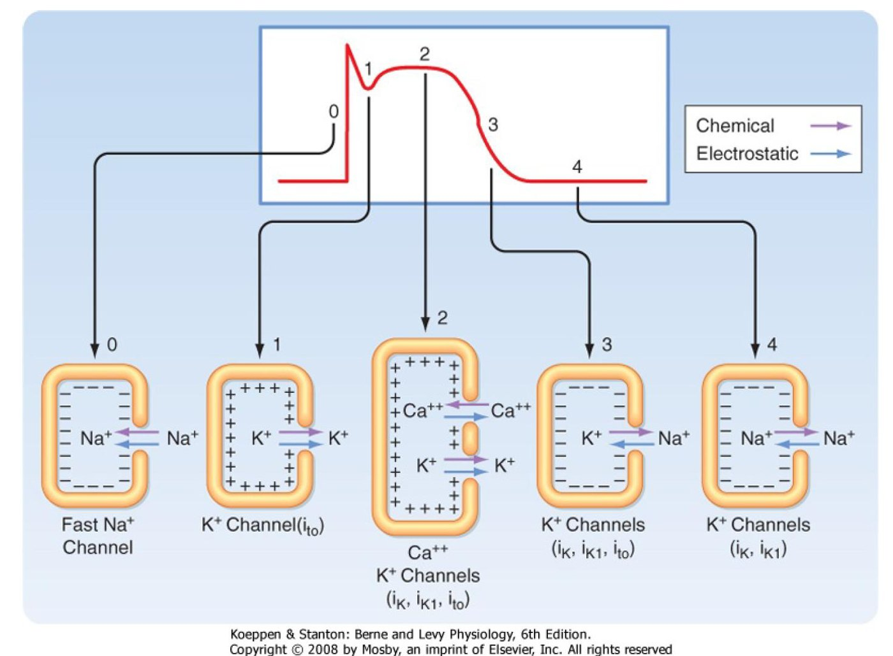
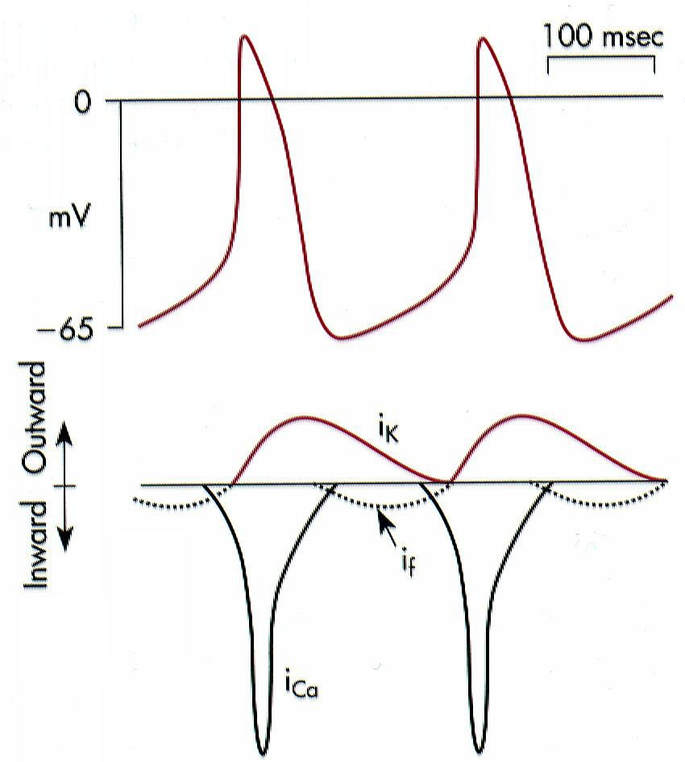
הזרם ה"מצחיק" (Funny current, If)
- זרם נתרן (ומעט אשלגן) נכנס דרך תעלות HCN שנפתחות דווקא בהיפרפולריזציה (~−55 mV) – "מצחיק" כי כל תעלה אחרת נפתחת בדה-פולריזציה.
- הוא שמניע את הזחילה האיטית של שלב 4 בתאי קוצב, ולכן קובע כמה מהר מגיעים לסף = קצב הלב.
- סימפתטי (cAMP) מגביר If; פרה-סימפתטי מדכא אותו.
אוטומטיות (Automaticity)
- היכולת של תא לייצר AP בעצמו, ללא גירוי חיצוני. קיימת ב-SAN, AVN ובמערכת His–Purkinje (קוצבים "רדומים": 30–40/דקה).
- היררכיה: הקוצב המהיר ביותר שולט. אם ה-SAN מאט או נכשל – ה-AVN (50) משתלט, ואם גם הוא נכשל – פורקיניה (30–40).
- בעליות ובחדרים אין אוטומטיות במצב תקין – בפתולוגיה (איסכמיה) יכולים להופיע מוקדים אקטופיים.
2.4 תקופה רפרקטורית (Refractory Period) חובה
ERP – Effective (absolute) Refractory Period
- משלב 0 ועד אמצע שלב 3 (קטע c–d באיור). שום גירוי, חזק ככל שיהיה, לא יוצר AP חדש.
- הסיבה: שערי האינאקטיבציה של תעלות ה-Na⁺ סגורים ולא "מתאפסים" עד שהממברנה חוזרת לכ-−50 mV. מהירות מיתוג השערים קובעת את ה-ERP.
- משמעות: ה-ERP חופף לרוב הכיווץ → אין סכימה, אין טטנוס, הלב חייב להירפות לפני הפעימה הבאה.
RRP – Relative Refractory Period
- מסוף ה-ERP עד תחילת שלב 4 (קטע d–e). גירוי חזק מהרגיל יכול ליצור AP, אבל קטן ואיטי יותר (רק חלק מתעלות ה-Na⁺ התאוששו).
- מהירות שיקום השערים קובעת את ה-RRP.
- בתאים איטיים ה-RRP נמשך לתוך שלב 4 – לכן AVN מוליך לאט ו"מסנן" גירויים תכופים (הגנה על החדרים בפרפור עליות).
2.5 ההשפעה הכרונוטרופית: איך האוטונומי מכוון את הקצב
Chronotropic effect = השפעה על קצב הלב (chronos = זמן). חיובי = מאיץ, שלילי = מאט. המנגנון: שינוי שיפוע שלב 4 בתאי הקוצב, שינוי הסף ושינוי פוטנציאל המנוחה.
סימפתטי – Norepinephrine על רצפטור β1 → ↑cAMP
- ↑ If ו-↑ ICa (וגם IK) → If + ICa > IK → שלב 4 תלול יותר → מגיעים לסף מהר → ↑HR (כרונוטרופי חיובי).
- גם ↑ מהירות הולכה ב-AVN (דרומוטרופי חיובי) ו-↑ כיווציות (אינוטרופי חיובי).
פרה-סימפתטי (ואגוס) – Acetylcholine על רצפטור M2
- פתיחת תעלות KACh → יציאת K⁺ → היפרפולריזציה של פוטנציאל המנוחה (רחוק יותר מהסף).
- ↓ If ו-↓ ICa → שלב 4 שטוח יותר → ↓HR (כרונוטרופי שלילי). גם האטת הולכה ב-AVN.
- במנוחה הוואגוס דומיננטי: קצב SAN "עצמאי" הוא ~100, והוואגוס מוריד אותו ל-~70.

3. אק"ג ECG – Electrocardiogram חובה
אק"ג הוא רישום של סכום הווקטורים של כל הזרמים החשמליים בלב, כפי שנראים מאלקטרודות על פני הגוף. 12 חיבורים = 12 זוויות מבט על אותו אירוע. בבוחן עובדים עם Lead II (יד ימין → רגל שמאל), שבו הווקטור הממוצע של הלב מצביע "לכיוון" האלקטרודה החיובית ולכן P, QRS ו-T חיוביים. זול, זמין, לא פולשני, ומספק אבחנה וכלי לטיפול.

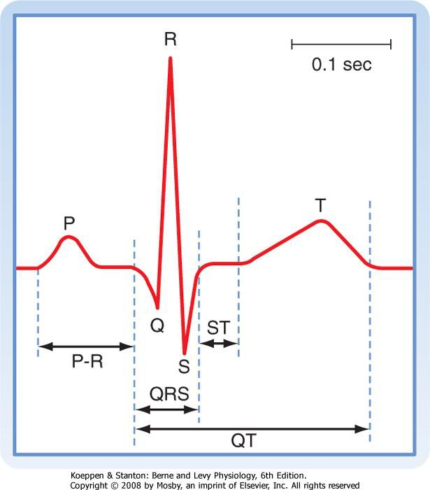

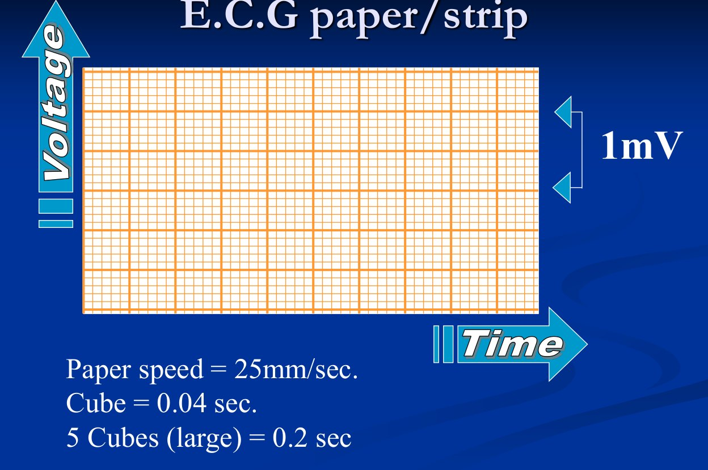
| רכיב | מה קורה בלב | ערכים תקינים | מה שינוי אומר |
|---|---|---|---|
| גל P | דה-פולריזציה של העליות (SAN → עלייה ימנית → שמאלית). הרה-פולריזציה של העליות "נבלעת" ב-QRS. | רוחב <0.12 ש' (3 מ"מ), גובה <2.5 מ"מ; חיובי ב-Lead II | אין P = אין פעילות סינוס (פרפור עליות); P רחב = הגדלת עלייה |
| מרווח PR | מתחילת P עד תחילת QRS = זמן ההולכה דרך העליות, ה-AVN (עיקר ההשהיה) וצרור היס. AV conduction time. | 0.12–0.20 ש' (3–5 ריבועים קטנים) | PR > 0.20 ש' = חסם AV דרגה 1 |
| קומפלקס QRS | דה-פולריזציה של החדרים. Q = מחיצה (משמאל לימין), R = מסת החדרים (שמאל דומיננטי), S = בסיס החדרים. | רוחב <0.12 ש'; Q תקין <0.04 ש' ו-<4 מ"מ | QRS רחב = הולכה חדרית איטית (חסם צרור, קצב חדרי, VT) |
| מקטע ST | plateau – כל החדרים מדופלרזים, כמעט תחילת רה-פולריזציה. איזואלקטרי. | אופקי, בגובה הקו האיזואלקטרי | עלייה/ירידה = איסכמיה/אוטם (לא בחומר הבוחן, אבל זה ההיגיון) |
| גל T | רה-פולריזציה של החדרים. חיובי באותו כיוון כמו QRS כי הרה-פולריזציה מתקדמת מהאפיקרד לאנדוקרד (הפוך לדה-פולריזציה). | חיובי ב-Lead II | T הפוך/מחודד = איסכמיה / היפרקלמיה |
| מרווח QT | כל הפעילות החשמלית של החדרים (דה + רה-פולריזציה) = משך ה-AP החדרי. | QTc = QT/√RR ≈ 0.40 ש' | QT ארוך = סיכון להפרעות קצב חדריות |
3.1 קצבים שצריך לזהות
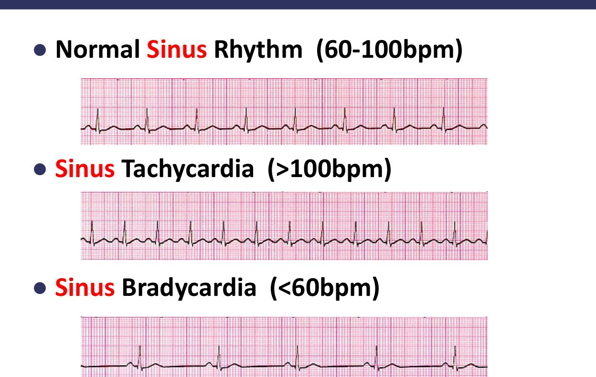


| קצב | P | PR | QRS | סדירות | המנגנון |
|---|---|---|---|---|---|
| Normal sinus rhythm | לפני כל QRS | 0.12–0.20 | צר | סדיר, 60–100 | SAN מוביל |
| Sinus tachycardia / bradycardia | תקין | תקין | צר | סדיר >100 / <60 | SAN מהיר (סימפתטי, מאמץ, חום) / איטי (ואגוס, ספורטאים, שינה) |
| AV block 1st degree | תקין | >0.20 ש' | צר | סדיר | השהיה מוגברת ב-AVN; כל גירוי עובר |
| AV block 2nd degree | יותר P מ-QRS | משתנה/קבוע | צר | לא סדיר (פעימות "נופלות") | חלק מהגירויים נחסמים ב-AVN |
| Atrial fibrillation | אין | – | צר | לא סדיר לחלוטין | מוקדים רבים בעליות יורים בכאוס; ה-AVN מעביר חלק אקראי מהם |
| Ventricular tachycardia | אין / לא קשור | – | רחב | סדיר, מהיר | מוקד/מעגל בחדר; מסכן חיים |
דוגמה מההרצאה: פרפור עליות – שלוש גישות טיפול שמלמדות את כל הפיזיולוגיה
- חוסם β (עיכוב סימפתטי) – מאט את ההולכה ב-AVN ומוריד את "התגובה החדרית" (rate control). הפרפור ממשיך, אבל החדרים פועמים לאט יותר.
- אנטי-אריתמי – מעכב תעלות K⁺ (Sotalol) – מאריך את ה-AP ואת התקופה הרפרקטורית, כך שהמעגלים בעלייה "נתקעים" ברקמה רפרקטורית ונכבים; ה-SAN חוזר להיות הקוצב (rhythm control).
- היפוך חשמלי (Cardioversion) – מכת חשמל מפעילה את כל התאים בבת אחת, כולם נכנסים לתקופה רפרקטורית יחד, הכאוס נעצר, וה-SAN (המהיר ביותר) יוצא ראשון לפעולה.
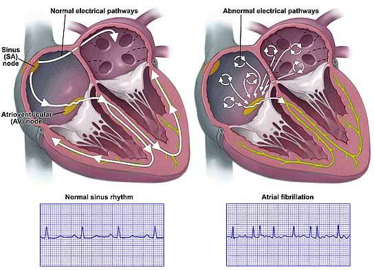
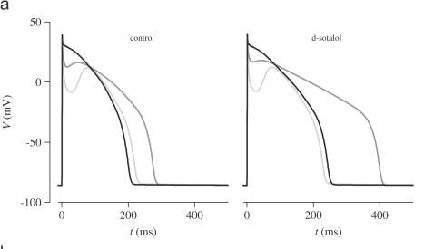
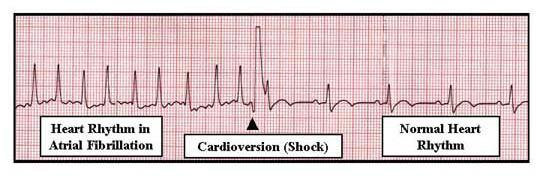
4. מחזור הלב וקולות הלב Cardiac Cycle & Heart Sounds חובה
Cardiac cycle = כל האירועים מתחילת פעימה אחת עד תחילת הבאה: סיסטולה (כיווץ החדרים ופליטה) ודיאסטולה (הרפיה ומילוי). ב-75 פעימות/דקה המחזור נמשך 0.8 ש': ~0.3 סיסטולה, ~0.5 דיאסטולה. כשהקצב עולה – הדיאסטולה מתקצרת הרבה יותר מהסיסטולה, ולכן זמן המילוי נפגע.
כלל הברזל של המסתמים: מסתם נפתח או נסגר רק לפי הפרש לחצים. הלחץ גבוה יותר "לפני" המסתם → נפתח; גבוה יותר "אחריו" → נסגר. אין עצבים ואין שרירים שמפעילים אותם.
4.1 דיאגרמת וויגרס (Wiggers Diagram) – תחנה אחרי תחנה
תרשים שמתאר על ציר זמן, לאורך פעימה אחת, את הלחצים (אאורטה, חדר שמאל, עלייה שמאל), נפח החדר, האק"ג והפונוקרדיוגרם. האיור הזה הופיע בבוחן הבוקר ובבוחן 1 עם אותיות A–D ומספרים 1–6:


סיסטולה עלייתית Atrial systole מספר 6 · אחרי גל P
- העליות מתכווצות ומוסיפות את ~20–30% האחרונים של המילוי ("atrial kick"). המסתמים האטריו-ונטריקולריים פתוחים, מסתמי העורקים סגורים.
- בסופה: נפח החדר מקסימלי = EDV, הלחץ בחדר עולה מעט מעל העלייה → המיטרלי נסגר (A) → S1. גל a בדופק הוורידי; קול S4 אם החדר קשיח.
כיווץ איזו-וולומטרי Isovolumetric contraction מספר 1 · A → B · במהלך QRS
- כל המסתמים סגורים; הנפח קבוע (לכן "איזו-וולומטרי") והלחץ בחדר מזנק מ-~8 ל-~80 mmHg.
- נגמר כשלחץ החדר עובר את הלחץ הדיאסטולי באאורטה (~80) → המסתם האאורטלי נפתח (B).
פליטה Systolic ejection מספר 2 · B → C
- פליטה מהירה (rapid ejection): הנפח יורד בחדות, הלחץ ממשיך לעלות עד השיא (~120). פליטה איטית (reduced ejection): הלחץ יורד, הזרימה נמשכת מתוך תנע.
- כמות הדם שיוצאת = SV. בסוף: הלחץ בחדר יורד מתחת לאאורטה → המסתם האאורטלי נסגר (C) → S2 ו"חריץ" (dicrotic notch) בעקומת האאורטה. גל T מופיע כאן.
הרפיה איזו-וולומטרית Isovolumetric relaxation מספר 3 · C → D
- כל המסתמים סגורים שוב; הנפח קבוע = ESV; הלחץ צונח. נגמר כשהלחץ בחדר יורד מתחת ללחץ העלייה → המיטרלי נפתח (D).
מילוי מהיר Rapid ventricular filling מספר 4
- הדם שהצטבר בעלייה במהלך הסיסטולה נשפך לחדר. ~70–80% מהמילוי קורה כאן, פסיבית, ללא כיווץ עלייתי. קול S3 אם החדר מורחב/באי-ספיקה.
מילוי איטי Diastasis מספר 5
- זרימה מעטה מהוורידים דרך העלייה לחדר. זהו השלב שמתקצר ראשון כשהקצב עולה. ואז מגיע גל P והמחזור חוזר.
4.2 קולות הלב (Heart Sounds S1–S4)
תקינים
- S1 – "לאב": סגירת המסתמים בין העליות לחדרים (מיטרלי + טריקוספידלי). תחילת הסיסטולה. נוצר בעיקר מזרימה מערבולתית בעת סגירת המסתם, ומעט מתנועת עלי המסתם והכורדות.
- S2 – "דאב": סגירת המסתמים בין החדרים לעורקים (אאורטלי + פולמונלי). סוף הסיסטולה/תחילת הדיאסטולה. יכול להתפצל בשאיפה (A2 לפני P2).
לא תקינים
- S3 – בתחילת הדיאסטולה (מילוי מהיר), כשדם נכנס בזרם לחדר מורחב ורפוי: אי-ספיקת לב ("S3 gallop"). יכול להיות תקין בצעירים.
- S4 – בסוף הדיאסטולה, בעת כיווץ העלייה לתוך חדר קשיח (היענות ירודה – היפרטרופיה, איסכמיה).
- אוושות (Murmurs) – צליל מתמשך מזרימה מערבולתית דרך מסתם מוצר (stenosis) או דולף (regurgitation), בסיסטולה או בדיאסטולה. דוגמה מההרצאה: היצרות מסתם אאורטלי → אוושה סיסטולית.

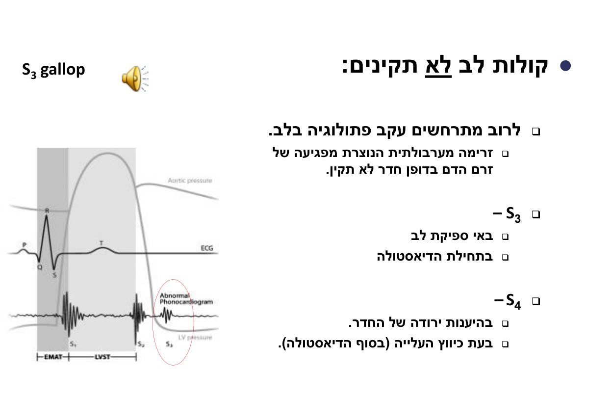
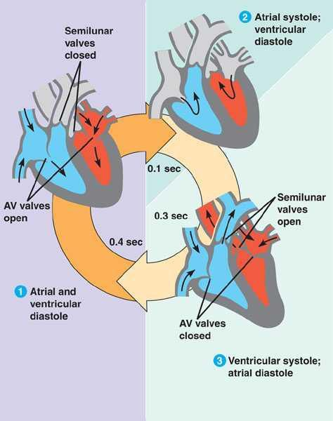
5. צימוד עירור-כיווץ, Preload, Afterload וכיווציות Mechanical Properties
משפט המפתח מההרצאה: "העבודה האפקטיבית של הלב נקבעת ע"י נפח ההתמלאות (preload), ההתנגדות הפריפרית (afterload) ויכולת השריר להתכווץ (contractility)". כל השאר – פרנק-סטרלינג, PV loop, הורמונים – הן דרכים לתאר ולשנות את שלושת אלה.
5.1 צימוד עירור-כיווץ (Excitation-Contraction Coupling)
מהגירוי החשמלי ועד ה-twitch
- AP רץ על הסרקולמה ולתוך ה-T-tubules.
- בשלב 2 (plateau) נפתחות תעלות Ca²⁺ מסוג L (DHP receptors) – סידן חוץ-תאי נכנס. הכמות קטנה, לא מספיקה לכיווץ.
- הסידן הזה נקשר ל-RyR (Ryanodine receptors) על ה-SR → שחרור סידן מסיבי מה-SR = Calcium-induced calcium release (CICR). זה הסידן התוך-תאי.
- Ca²⁺ נקשר ל-Troponin C → טרופומיוזין זז → אקטין-מיוזין נקשרים → כיווץ (ATP).
- הרפיה: SERCA שואב סידן חזרה ל-SR (מעוכב ע"י Phospholamban); NCX (מחליף 3Na⁺/1Ca²⁺) מוציא סידן מהתא; גם משאבת Ca²⁺-ATPase בממברנה.
ההבדל המהותי משריר שלד
- בשריר שלד הסידן מגיע רק מה-SR (צימוד מכני ישיר DHP–RyR). בשריר לב צריך את שני המקורות: חוץ-תאי (טריגר) ותוך-תאי (הכמות). בלי סידן חוץ-תאי – הלב לא מתכווץ.
- לכן כל מה שמעלה את ריכוז הסידן בציטוזול מגביר כיווציות – זה הבסיס של כל האפקטים האינוטרופיים.
- דיגוקסין (דוגמה קלינית): מעכב Na⁺/K⁺-ATPase → Na⁺ תוך-תאי עולה → ה-NCX (שתלוי במפל הנתרן) מוציא פחות Ca²⁺ → יותר Ca²⁺ נשאר בתא ונאגר ב-SR → כיווץ חזק יותר (אינוטרופי חיובי).

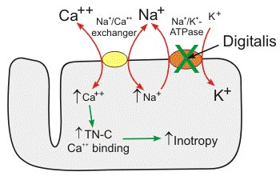
5.2 שלושת הגורמים חובה
Preload – עומס מוקדם
- הגדרה: העומס/המתיחה של השריר בסוף הדיאסטולה, רגע לפני הכיווץ. מבטא את נפח ההתמלאות של החדר.
- המדד: EDV (או EDP – לחץ סוף-דיאסטולי, נוח להשוואה בין לבבות בגדלים שונים).
- המשמעות התאית: מתיחה מסדרת את הסרקומרים באורך אופטימלי (~2.2 µm) – יותר חפיפה אקטין-מיוזין, יותר רגישות לסידן.
- המתח הפסיבי שמתפתח לפני הכיווץ.
- ↑ ע"י: החזר ורידי ↑ (עירוי, שכיבה, כיווץ ורידים סימפתטי, קצב איטי = זמן מילוי), ↓ ע"י: דימום, עמידה, קצב מהיר מאוד.
Afterload – עומס בתר
- הגדרה: הכוח שכנגדו הלב מתכווץ כדי לפלוט דם. "העומס ההידראולי שיש להתגבר עליו".
- תלוי ב: התנגדות העורקים הפריפריים (TPR), לחץ הדם באאורטה, היענות (elastance) העורקים.
- יש בו מרכיב איזומטרי (לפני פתיחת המסתם – בניית לחץ בנפח קבוע) ומרכיב איזוטוני (קיצור כנגד ההתנגדות הפריפרית).
- ↑ ע"י: כיווץ עורקיקים (NE), יתר לחץ דם, היצרות אאורטלית. ↓ ע"י: מרחיבי כלי דם (ניטרופרוסיד).
Contractility / Inotropy – כיווציות
- הגדרה: היכולת הפנימית של השריר לפתח כוח/להתקצר, ללא תלות ב-preload וב-afterload.
- ברמת התא: כמות הסידן בציטוזול ורגישות המיופילמנטים לסידן; מהירות פירוק ATP ביצירת קשרי אקטין-מיוזין.
- ברמת החדר: מסה (מספר תאים), אחידות, סנכרון.
- מדדים: dP/dt מקסימלי, שיפוע ה-ESPVR (Ees). לא לחץ דם ולא EF לבדם (הם תלויים גם בעומסים).
- ↑ ע"י: קטכולאמינים, דיגוקסין, ↑HR. ↓ ע"י: חוסמי β, חמצת, היפוקסיה קשה, אי-ספיקה.
5.3 נפחים ומקטעים חובה
| מושג | הגדרה | ערך תקין |
|---|---|---|
| EDV – End-Diastolic Volume | נפח החדר בסוף המילוי (= preload) | ~120–130 מ"ל |
| ESV – End-Systolic Volume | הנפח השאריתי אחרי הפליטה. הלב לא מתרוקן לחלוטין! | ~50 מ"ל |
| SV – Stroke Volume | נפח הדם שיוצא בפעימה אחת = EDV − ESV | ~70 מ"ל |
| EF – Ejection Fraction | אחוז הדם שיוצא מתוך מה שהיה בחדר = SV / EDV. המדד הנפוץ ביותר לתפקוד הלב (אקו, מיפוי). | ~60% |
| CO – Cardiac Output | כמות הדם שיוצאת מהלב ביחידת זמן = SV × HR. פה נכנס מרכיב הזמן. | 5–6 ל'/דקה במנוחה |
תרגיל חשבון שחוזר בשאלות
EDV = 130, ESV = 50 → SV = 80 מ"ל; EF = 80/130 ≈ 62%; ב-HR 70 → CO = 5.6 ל'/דקה.
מה קורה כשהקצב עולה מ-60 ל-120? זמן הדיאסטולה מתקצר → פחות מילוי → EDV ו-SV קטנים מעט; אבל HR הוכפל, ולכן CO עולה (SV יורד פחות ממה ש-HR עולה). רק בקצבים גבוהים מאוד (>~180) ה-SV צונח כל כך ש-CO מתחיל לרדת.
6. חוק פרנק-סטרלינג ולולאת לחץ-נפח Frank-Starling Law & PV Loop חובה
6.1 חוק פרנק-סטרלינג (Frank-Starling Law, 1914)
הניסוח: הקשר בין האורך ההתחלתי של סיב השריר (= נפח המילוי, preload) לבין הכוח שאותו סיב מפתח (= SV, לחץ, עבודה). בפשטות: ככל שהלב מתמלא יותר – הוא מתכווץ חזק יותר ופולט יותר – עד גבול.
ניסוי 2 מההרצאה: מילוי הדרגתי של לב רפוי יוצר מתח פסיבי (העקומה הדיאסטולית, עולה בתלילות בנפחים גבוהים). גירוי בכל נפח יוצר מתח אקטיבי (העקומה הסיסטולית). תצפיות:
- לב ריק לא יכול לפתח מתח אקטיבי.
- המתח האקטיבי תלוי ב-preload; ה-preload "היעיל" הוא זה שמאפשר מתח אקטיבי מקסימלי.
- מעבר ל-preload מסוים יש ירידה בכוח (הסרקומרים נמתחו יתר על המידה – פחות חפיפה). בלב בריא כמעט לא מגיעים לשם.
המנגנון התאי: מתיחה → אורך סרקומר אופטימלי (~2.2 µm) → חפיפה מיטבית של אקטין-מיוזין, וגם ↑ רגישות הטרופונין לסידן (length-dependent activation).
למה זה חשוב – שני תפקידים
- איזון בין שתי המשאבות: אם לב ימין פולט מעט יותר, לב שמאל מקבל יותר דם, נמתח יותר ופולט יותר – תוך פעימות ספורות הפליטה משתווה. ללא עצבים, ללא הורמונים.
- התאמה אוטומטית להחזר הוורידי: כל מה שחוזר ללב – יוצא. "הלב פולט מה שהוא מקבל".
בקרה מקומית (Intrinsic): פרנק-סטרלינג הוא מנגנון פנימי של הלב – לא דורש עצבים או הורמונים, ונצפה גם בלב מבודד.

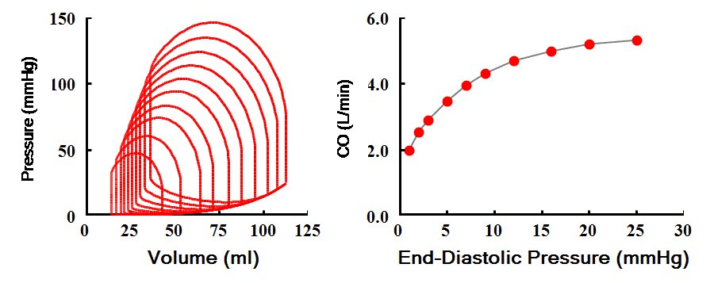

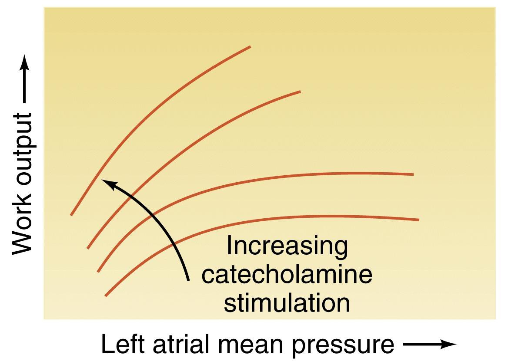

6.2 לולאת לחץ-נפח (Pressure-Volume Loop) – נקודה אחרי נקודה
אותו מחזור לב, אבל על צירים של נפח (x) מול לחץ (y) בחדר שמאל – בלי ציר זמן. הלולאה נעה נגד כיוון השעון. השטח בתוכה = עבודת הפעימה (stroke work). האיור עם האותיות A–F הופיע בבוחן הבוקר ובבוחן 1:

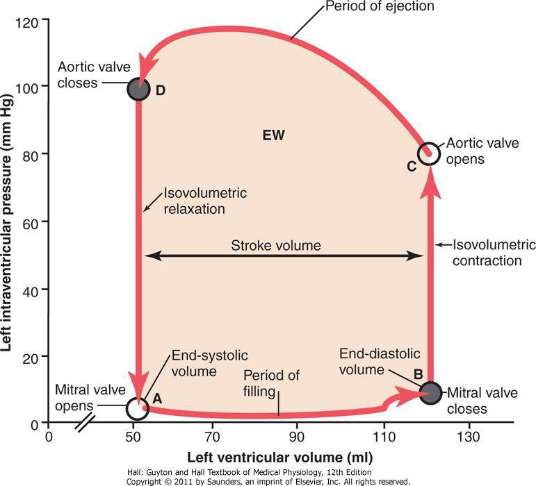

נקודה A – פתיחת המסתם המיטרלי נפח = ESV · לחץ נמוך ביותר
- סוף ההרפיה האיזו-וולומטרית. לחץ החדר ירד מתחת ללחץ העלייה. זהו הנפח השאריתי.
A → B → C – מילוי דיאסטולי הנפח עולה, הלחץ כמעט לא
- A→B: התמלאות תוך ירידת לחץ – איך? החדר עדיין מתרפה באופן אקטיבי ו"שואב" (suction), הלחץ ממשיך לרדת למרות שנפח נכנס. B = הרפיה מקסימלית.
- B→C: התמלאות תוך יצירת מתח פסיבי – הדופן נמתחת; זה הקטע שרץ על ה-EDPVR. סיסטולת העלייה היא "הבליטה" הקטנה ממש לפני C.
נקודה C – סגירת המסתם המיטרלי נפח = EDV = Preload
- החדר מתחיל להתכווץ, הלחץ עולה מעל העלייה והמיטרלי נסגר (S1). הנקודה שמייצגת את ה-preload.
C → D – כיווץ איזו-וולומטרי קו אנכי: נפח קבוע, לחץ מזנק
- כל המסתמים סגורים. הלחץ עולה מ-~10 ל-~80 mmHg.
נקודה D – פתיחת המסתם האאורטלי ותחילת הפליטה לחץ החדר = לחץ דיאסטולי באאורטה (~80)
- תחילת ה-Systolic ejection.
D → E → F – פליטה הנפח יורד
- D→E – פליטה מהירה: כיווץ אקטיבי, התרוקנות תוך כדי עליית לחץ. E = שיא הלחץ = ה-afterload בלולאה.
- E→F – פליטה איטית: התרוקנות תוך כדי ירידת לחץ – איך אפשרי? הדם ממשיך לצאת בגלל תנע (אינרציה) למרות שהחדר כבר מתחיל להרפות.
נקודה F – סגירת המסתם האאורטלי נפח = ESV
- לחץ החדר ירד מתחת לאאורטה (S2). רצף נקודות F בתנאים שונים יוצר את ה-ESPVR.
F → A – הרפיה איזו-וולומטרית קו אנכי: נפח קבוע, לחץ צונח
- חזרה ל-A.
EDPVR – End-Diastolic Pressure-Volume Relationship
- הקו שמחבר את נקודות C (EDV) בתנאי preload שונים = העקומה הפסיבית של פרנק-סטרלינג.
- מבטא את ההיענות (compliance) של החדר: ΔV/ΔP. לב קשיח (היפרטרופיה, איסכמיה) – שיפוע תלול: שינוי קטן בנפח → שינוי גדול בלחץ. לב אלסטי – שיפוע שטוח.
ESPVR – End-Systolic Pressure-Volume Relationship
- הקו שמחבר את נקודות F (ESV) = העקומה האקטיבית של פרנק-סטרלינג. מבטא את העבודה הפוטנציאלית של הלב.
- שיפועו (Ees) הוא מדד לכיווציות – ורק הוא משתנה עם אינוטרופיה. שינוי ב-preload או ב-afterload לא משנה את השיפוע – הלולאה רק זזה לאורכו.
6.3 מה קורה ללולאה כשמשנים כל גורם (ניסויים 4–6)
| שינוי | EDV | ESV | SV | EF | לחץ סיסטולי | איך הלולאה זזה | שיפוע ESPVR |
|---|---|---|---|---|---|---|---|
| ↑ Preload (עירוי, החזר ורידי) | ↑ | ≈ (עולה מעט) | ↑ | ↑ מעט | ↑ | מתרחבת ימינה על אותו EDPVR | ללא שינוי |
| ↑ Afterload (TPR ↑, NE, יל"ד) | ≈ (עולה אחרי כמה פעימות) | ↑ | ↓ | ↓ | ↑ | גבוהה וצרה, נקודת F נעה למעלה-ימינה על אותו ESPVR | ללא שינוי |
| ↑ Contractility (קטכולאמינים, דיגוקסין) | ≈ | ↓ | ↑ | ↑ | ↑ | מתרחבת שמאלה; ESPVR תלול יותר | ↑ (תלול) |
| ↓ Contractility (חוסמי β, אי-ספיקה) | ↑ (עם הזמן) | ↑ | ↓ | ↓ | ↓ | קטנה, זזה ימינה; ESPVR שטוח | ↓ (שטוח) |
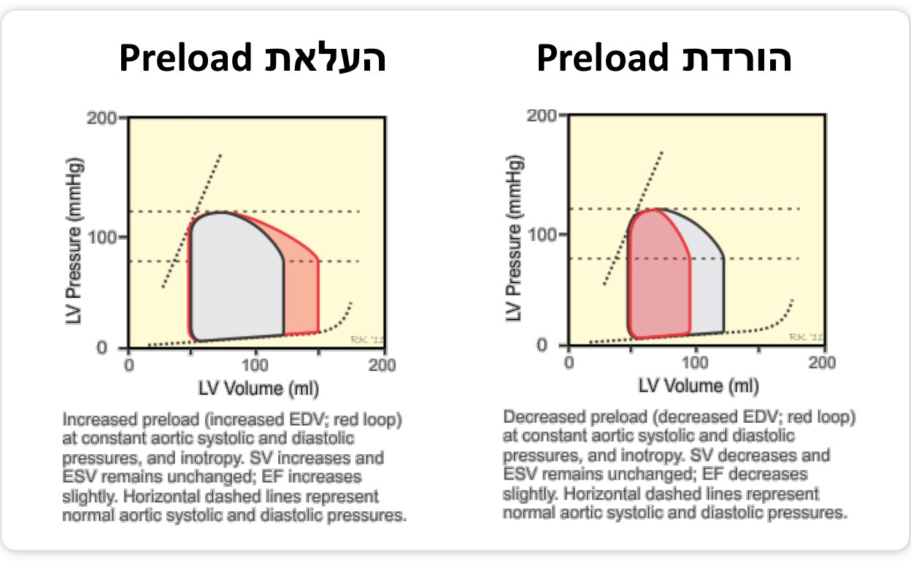
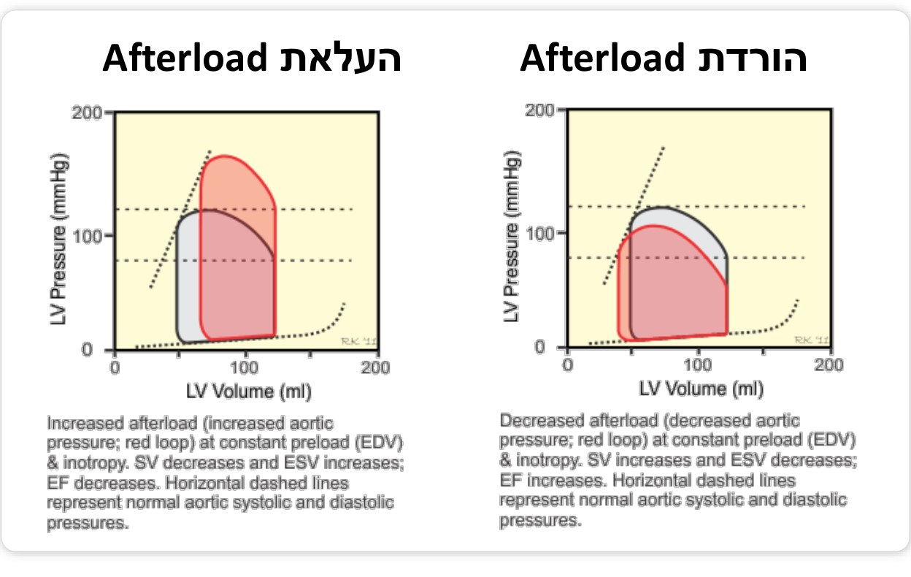
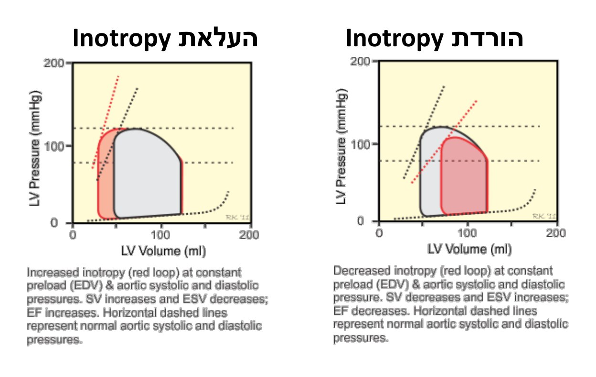
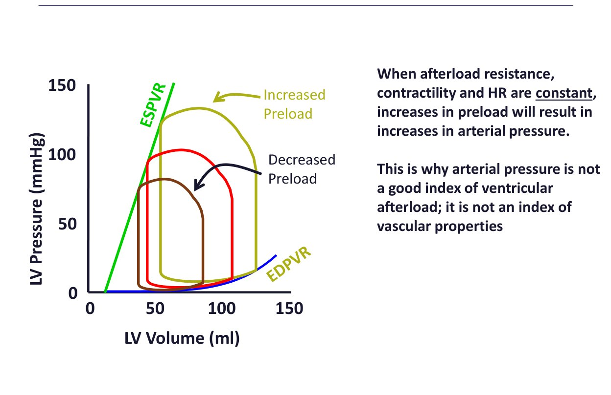
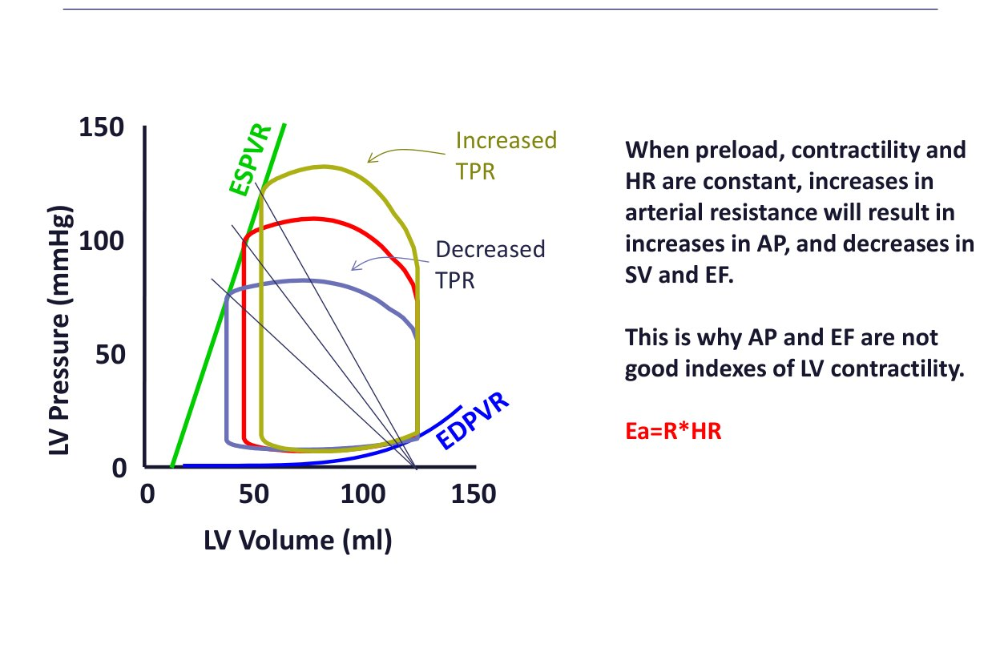
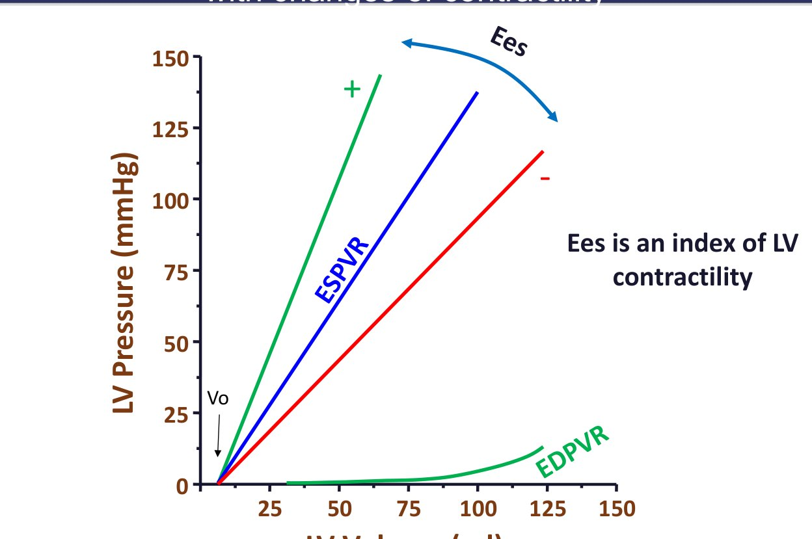
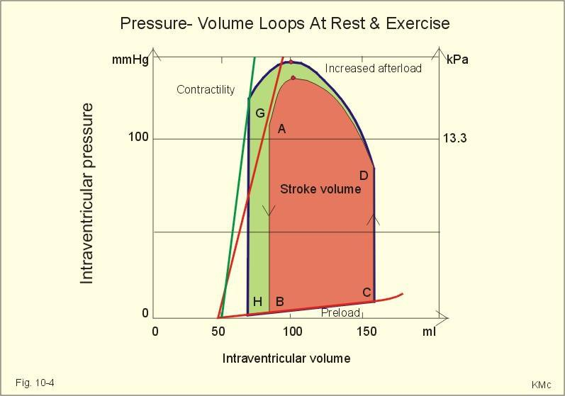
6.4 מאפייני האפקט האינוטרופי (ניסוי 7)
הנחה: תפקיד האפקט האינוטרופי הוא להביא כמה שיותר תאים לסנכרון. הגורם המגביל בכיווץ הוא סידן → המנגנון יעבוד דרך סידן.
קטכולאמינים (NE) על β1 → Gs → ↑cAMP → PKA מזרחן:
- תעלות Ca²⁺ מסוג L בממברנה → יותר סידן נכנס בכל AP → יותר CICR → ↑ כיווץ.
- Phospholamban → מסיר את העיכוב מ-SERCA → סידן נשאב ל-SR מהר יותר → ↑ הרפיה (lusitropy) + יותר סידן אגור לפעימה הבאה.
- Troponin I → מחזיר את העיכוב על קשר אקטין-מיוזין מהר יותר → הרפיה מהירה.
למה זה גאוני
- סידן נכנס מהר יותר בהתחלה ויוצא מהר יותר בהמשך → פעימה חזקה, מסונכרנת וקצרה.
- הרפיה מהירה = מילוי יעיל גם כשהדיאסטולה קצרה → מאפשרת הגברת קצב בלי לאבד את המילוי.
- לכן הסימפתטי מגביר הספק (CO) גם אם SV יורד מעט בקצב גבוה: CO = SV × HR, ושניהם נדחפים יחד.
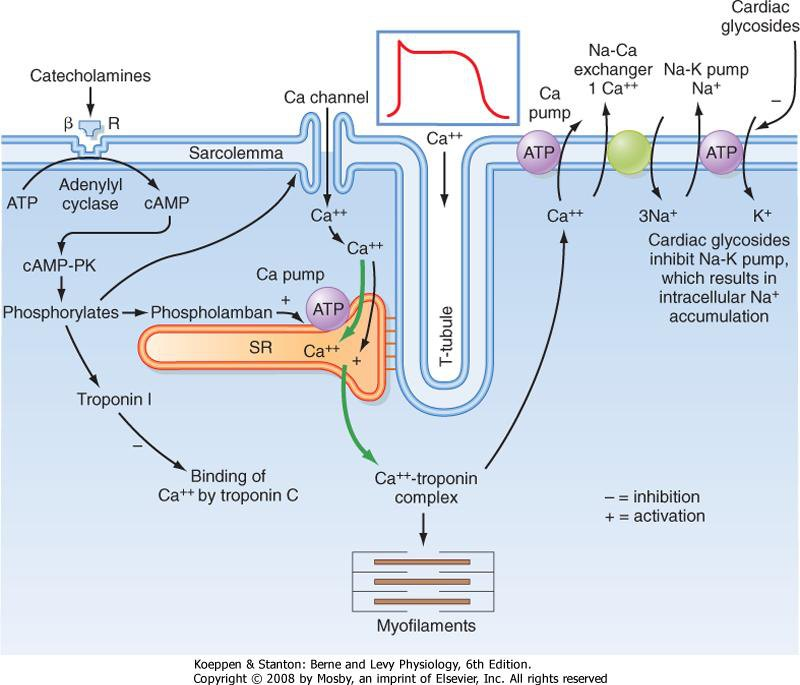
7. כלי הדם והמודינמיקה Vessels: Pressure, Flow, Resistance
משפט המפתח: "זרימת דם נקבעת על ידי זרימה, התנגדות ולחץ." כל השאלות בפרק הזה חוזרות לנוסחה אחת – Q = ΔP / R – ולעובדה שההתנגדות תלויה ברדיוס בחזקת 4, ולכן הגוף שולט בזרימה דרך קוטר העורקיקים.
7.1 סוגי כלי הדם ותפקידם
| כלי | מבנה הדופן | תפקיד פיזיולוגי | נתון לזכור |
|---|---|---|---|
| עורקים (Arteries) | דופן עבה, הרבה רקמה אלסטית (אאורטה) ושריר חלק | שמירה על לחץ דם; הפיכת זרימה פעימתית לרציפה (Windkessel – מנגנון אבי העורקים) | אאורטה: קוטר 25 מ"מ, דופן 2 מ"מ; ~11% מנפח הדם |
| עורקיקים (Arterioles) | דופן עם שריר חלק יחסית עבה לקוטר | כלי ההתנגדות – המקום העיקרי של נפילת הלחץ; מווסתים את חלוקת הדם בין איברים ואת TPR | קוטר 30 µm; שינוי רדיוס קטן = שינוי R ענק |
| נימים (Capillaries) | אנדותל + ממברנת בסיס בלבד (דופן 0.5 µm) | חילוף חומרים – לחץ נמוך, זרימה איטית, שטח חתך עצום | קוטר 8 µm; שטח חתך כולל ~1,400 סמ"ר; רק ~5% מהדם |
| ורידונים (Venules) | דק מאוד | חילוף חומרים (הצד הוורידי של הנימה חדיר יותר), איסוף | |
| ורידים (Veins) | דופן דקה, מעט אלסטין, מסתמים | כלי קיבולת – מאגר דם לשעת צורך; היענות גבוהה (×20 מעורקים) | ~67% מנפח הדם; vena cava 30 מ"מ עם דופן 1.5 מ"מ |
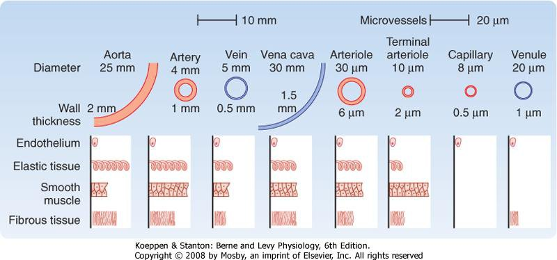
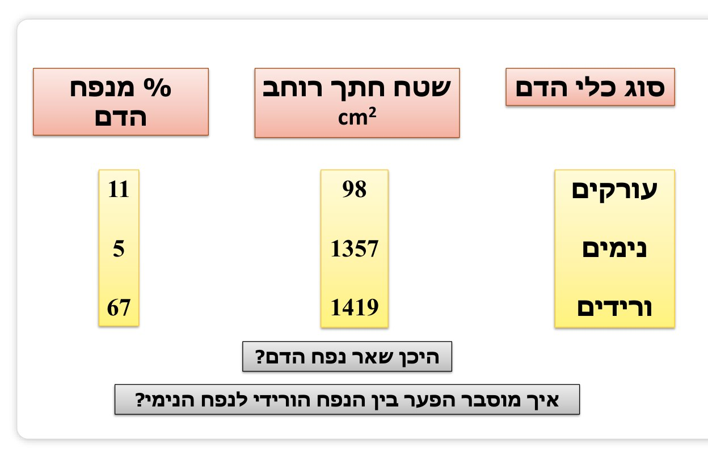

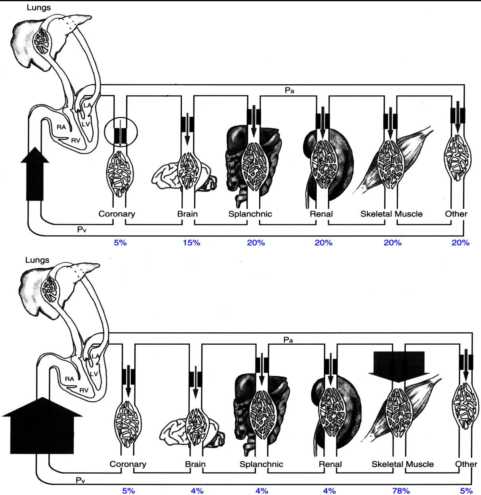
7.2 לחץ, זרימה, התנגדות חובה
- זרימה (Q, Flow) – נפח ליחידת זמן (מ"ל/דקה). תלויה ישירות בהפרש הלחצים בין הכניסה ליציאה (Pi − Po), לא בלחץ המוחלט.
- התנגדות (R) – לא נמדדת ישירות; מחושבת מהפרש הלחצים והזרימה. נקבעת ע"י תכונות הצינור ונוזל הדם.
- ברמת המערכת: CO = (MAP − CVP) / TPR, ומכאן TPR = (MAP − RAP) / CO ו-MAP ≈ CO × TPR.
פואזיי: צמיגות η, אורך L, רדיוס r
- הרדיוס הוא הגורם הדומיננטי: הכפלת הרדיוס → ההתנגדות קטנה פי 16 והזרימה גדלה פי 16. באיור מההרצאה: d=1 → 1 מ"ל/דקה, d=2 → 16, d=4 → 256.
- לכן השליטה הביולוגית על זרימת הדם נעשית ע"י שינוי רדיוס כלי הדם (העורקיקים).
- צמיגות ואורך משתנים מעט בתנאים פיזיולוגיים.
המטוקריט וצמיגות הדם (Hematocrit & Viscosity)
- הצמיגות (η) של הדם היא פי ~3 ממים, והגורם העיקרי לה הוא המטוקריט (אחוז נפח הכדוריות, ~45%). גם חלבוני פלזמה תורמים.
- ↑המטוקריט (פוליציטמיה, התייבשות) → ↑צמיגות באופן לא ליניארי → ↑R → ↓זרימה, ↑עבודת הלב. ↓המטוקריט (אנמיה) → ↓צמיגות → זרימה קלה יותר, אבל פחות נשיאת חמצן.
- בכלים הקטנים מאוד הצמיגות האפקטיבית יורדת (אפקט Fåhræus–Lindqvist) – הכדוריות מסתדרות במרכז.
התנגדות בטור ובמקביל
- בטור (אאורטה → עורקים → עורקיקים → נימים → ורידים): Rtotal = R1 + R2 + … – העורקיקים תורמים את רוב ההתנגדות.
- במקביל (האיברים השונים, מיליארדי הנימים): 1/Rtotal = 1/R1 + 1/R2 + … – ההתנגדות הכוללת קטנה מכל אחת לבד. לכן, למרות שכל נימה בודדת צרה מאוד, ההתנגדות הכוללת של הנימים קטנה מזו של העורקיקים.
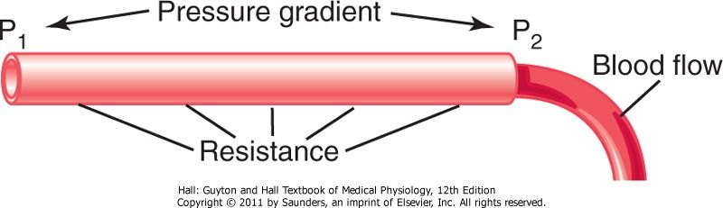
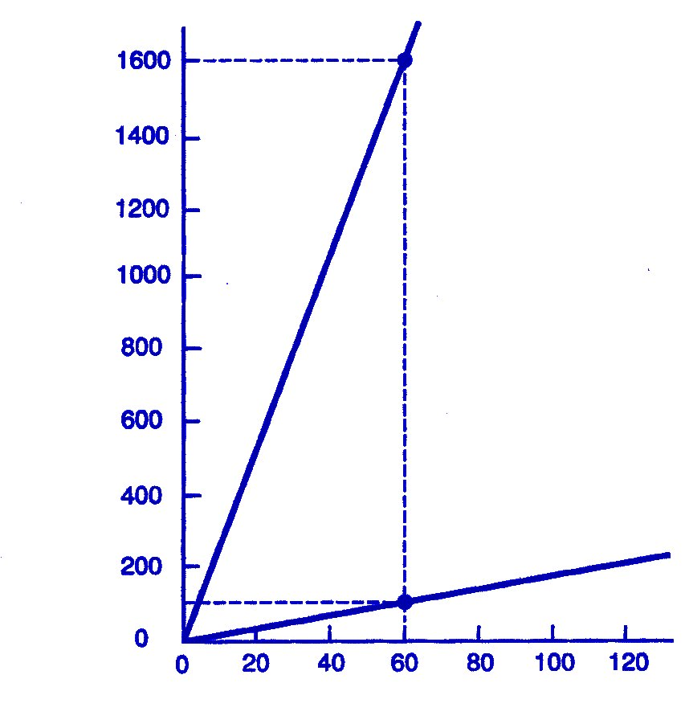

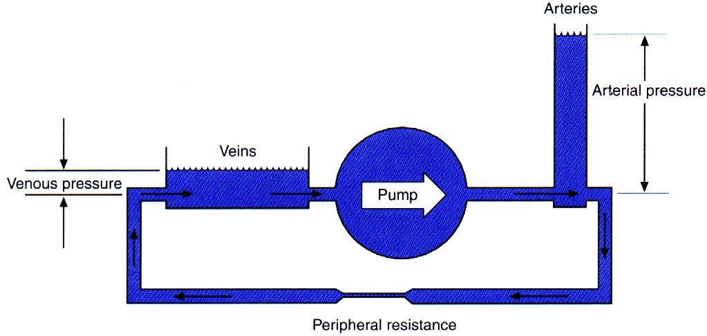
7.3 מהירות זרימה, שטח חתך וברנולי
זרימה = מהירות × שטח חתך
- הזרימה (Q) שווה בכל רמה של המערכת (מה שנכנס לאאורטה עובר דרך כל הנימים וחוזר ב-vena cava) – אבל שטח החתך הכולל (סכום שטחי כל הכלים במקביל) שונה מאוד.
- לכן המהירות הפוכה לשטח החתך, ולא תלויה במרחק מהלב: אאורטה (~4.5 סמ"ר) – ~50 ס"מ/שנ'; נימים (~1,400–4,500 סמ"ר) – ~0.03–0.1 ס"מ/שנ' (איטי = זמן לחילוף חומרים); vena cava – המהירות שוב עולה (אבל פחות מהאאורטה, כי שטח החתך הוורידי גדול יותר).

משוואת ברנולי (Bernoulli Equation)
- האנרגיה הכוללת של נוזל זורם נשמרת: לחץ (אנרגיה פוטנציאלית של לחץ) + אנרגיה קינטית (½ρv²) + אנרגיית גובה.
- המסקנה החשובה: במקום שבו המהירות עולה (היצרות) – הלחץ הצידי יורד. "אפקט ברנולי".
- דוגמאות: בהיצרות מסתם אאורטלי הדם מואץ ומופיע מפל לחץ (gradient); בעורק מוצר הלחץ הצידי בהיצרות נמוך – מה שעלול לסייע לקריסת הכלי; האנרגיה הקינטית של הדם היוצא מהחדר היא חלק מהעבודה.
- רוב נפילת הלחץ במערכת אינה מברנולי אלא מחיכוך (התנגדות) – אבל ברנולי מסביר למה "לחץ" ו"מהירות" הם לא אותו דבר.
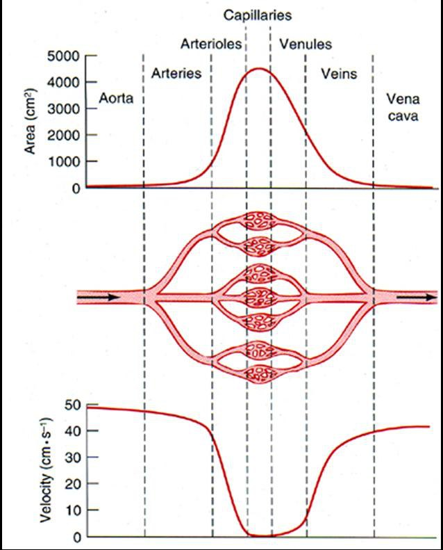

7.4 היענות ולחץ הדם העורקי
היענות (Compliance)
- כמה נפח כלי יכול לקלוט עבור עליית לחץ נתונה. ורידים: היענות גבוהה מאוד (פי ~20 מעורקים) – קולטים נפח גדול בלחץ נמוך = כלי קיבולת. עורקים: היענות נמוכה – שינוי נפח קטן מעלה את הלחץ מאוד.
- היענות עורקית ו-Windkessel: בסיסטולה האאורטה נמתחת ואוגרת חלק מה-SV; בדיאסטולה היא מתכווצת חזרה ודוחפת את הדם הלאה → הזרימה בנימים רציפה למרות שהלב פעימתי, והלחץ הדיאסטולי לא צונח לאפס.
- עורקים קשיחים (גיל, טרשת): פחות אגירה → לחץ סיסטולי גבוה יותר, דיאסטולי נמוך יותר → לחץ דופק רחב.

לחץ הדם העורקי – הגדרות
- סיסטולי (~120 mmHg) – השיא בזמן הפליטה. דיאסטולי (~80) – השפל לפני הפליטה הבאה.
- לחץ דופק (Pulse pressure) = סיסטולי − דיאסטולי ≈ 40. נקבע ע"י SV (↑SV → ↑PP) והיענות העורקים (↓היענות → ↑PP).
- לחץ עורקי ממוצע (MAP) חובה – הממוצע לאורך הזמן (אינטגרל). כיוון שהדיאסטולה ארוכה יותר, הוא קרוב יותר לדיאסטולי:
- 120/80 → MAP ≈ 80 + 40/3 ≈ 93 mmHg.
- מה קובע את לחץ הדם? גורמים פיזיולוגיים: CO (HR × SV) ו-TPR. גורמים פיזיקליים: נפח הדם העורקי והיענות העורקים. כל שינוי ב-HR, SV, TPR, נפח או היענות משנה את הלחץ.
- מדידה: שרוול מנופח מעל הסיסטולי → אין זרימה, שקט. שחרור הדרגתי: מתחת לסיסטולי הדם עובר במערבולת ונשמעים קולות קורוטקוף; מתחת לדיאסטולי הזרימה למינרית והקולות נעלמים.


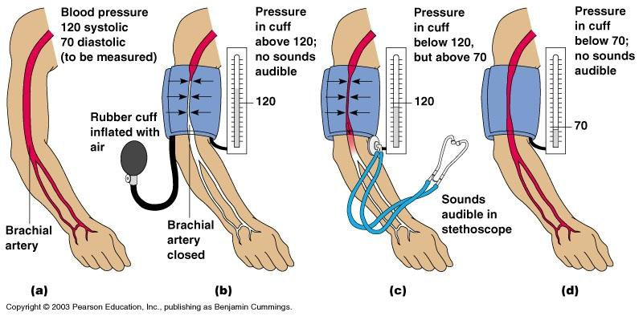
8. חילוף חומרים בנימים וכוחות סטרלינג Capillary Exchange & Starling Forces
כל המערכת קיימת בשביל הרגע הזה: דם זורם לאט, בלחץ נמוך, דרך צינור שדופנו היא שכבת אנדותל אחת. שני תהליכים נפרדים: דיפוזיה (גזים ומומסים – הדרך העיקרית לחילוף חומרים) ופילטרציה/ספיגה (תנועת מים עם מומסים דרך נקבוביות – קובעת את מאזן הנוזלים, לא את ההזנה).
8.1 דופן הנימה ומנגנוני המעבר
פרמיאביליות (חדירות) דופן הנימה
- משתנה בין איברים: אפסית במוח (BBB – tight junctions), בינונית בשריר, גדולה מאוד בכבד ובכליה (נימים מחוררים/סינוסואידים).
- משתנה לאורך הנימה: גבוהה יותר בצד הוורידי (יותר נקבוביות).
- תלויה בסוג הנקבוביות ובגודלן, ובמבנה ממברנת הבסיס שמסננת לפי גודל ומטען.
ארבעה מנגנוני מעבר
- דיפוזיה – העיקרי. גזים ומומסים אפולריים (O₂, CO₂) דרך הממברנה; מים ומומסים קטנים מסיסים במים (גלוקוז, יונים) דרך נקבוביות.
- פילטרציה – תנועת מים (bulk flow) דרך נקבוביות לפי לחצים.
- פינוציטוזה – בועיות; מולקולות גדולות.
- קליטה דרך רצפטורים.
האנדותל כאיבר פעיל (ואזו-אקטיבי)
- מרחיבים (vasodilation): Nitric Oxide (NO) – מופרש בתגובה למאמץ גזירה ולאצטילכולין, מפעיל גואנילט ציקלאז → cGMP → הרפיית שריר חלק; Prostacyclin (PGI₂) – דרך cAMP.
- מכווץ (vasoconstriction): Endothelin.
- גם מטבוליטים של הרקמה (אדנוזין, H⁺, CO₂, K⁺) מרחיבים – "בקרה מקומית".
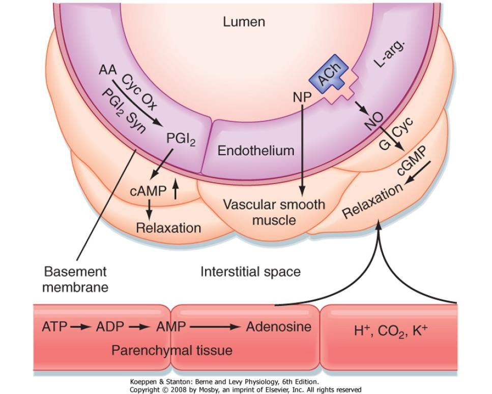
8.2 דיפוזיה וחוק פיק (Fick's Law)
- J – כמות חומר ליחידת זמן; P – חדירות הנימה לחומר; S – שטח פני הנימה; ΔC – הפרש הריכוזים בין הדם לנוזל הבין-תאי.
- קצב הדיפוזיה ישר לשטח, לחדירות ולמפל הריכוז; הפוך למרחק הדיפוזיה (עובי הדופן + מרחק לתא).
- גורמים שקובעים: מסיסות בשומן (גזים עוברים ישר דרך הממברנה), גודל ומספר הנקבוביות, מטען, מרחק מהאנדותל לתא המטרה, מהירות הזרימה בנימה.
Flow-limited מול Diffusion-limited
- מוגבל-זרימה: חומר שחודר בקלות (O₂, CO₂, גזים מסיסים בשומן, מים) – מתאזן כבר בתחילת הנימה. הדרך היחידה להעביר יותר היא להגדיל את הזרימה (לפתוח עורקיקים, לגייס נימים). למשל: אספקת חמצן לשריר שלד פעיל.
- מוגבל-דיפוזיה: חומר שעובר לאט (מולקולות גדולות/פולריות, או כשהמרחק גדול) – לא מתאזן גם עד סוף הנימה. מגבילים אותו החדירות, השטח והמרחק. למשל: אספקת גלוקוז לפיברובלסטים בגיד (מעט נימים, מרחק גדול), חילוף גזים בריאה עם בצקת/פיברוזיס.
- השאלה מההרצאה: לתאי שריר הצמודים לנימה – חמצן, גלוקוז ולקטט כולם מוגבלי-זרימה; לפיברובלסט בגיד – הגלוקוז מוגבל-דיפוזיה.

8.3 פילטרציה וספיגה: היפותזת סטרלינג חובה
בהרצאה: M = k[(Pc + πi) − (Pi + πc)] – M חיובי = פילטרציה החוצה, M שלילי = ספיגה פנימה
| כוח | מה זה | כיוון | ערך טיפוסי | מה משנה אותו |
|---|---|---|---|---|
| Pc – לחץ הידרוסטטי בנימה | לחץ הדם בתוך הנימה. הכוח העיקרי שדוחף נוזל החוצה. | החוצה (+) | ~35 mmHg בצד העורקי → ~15 בצד הוורידי (ממוצע ~17–25) | נקבע בעיקר ע"י קוטר העורקיקים והסוגרים (הרחבה → ↑Pc); וגם ע"י הלחץ הוורידי (↑לחץ ורידי → ↑Pc ישירות – אי-ספיקת לב, חסימה ורידית, עמידה ממושכת) |
| Pi – לחץ הידרוסטטי בין-תאי | לחץ הנוזל ברקמה. | פנימה (−) אם חיובי | ~0 עד מעט שלילי (−3 mmHg) ברקמה תקינה – קטן מאוד, השפעה זניחה | עולה בבצקת (מגביל אותה), בדלקת |
| πc – לחץ אונקוטי (קולואיד-אוסמוטי) של הפלזמה | משיכת מים פנימה ע"י חלבוני הפלזמה, בעיקר אלבומין (הכי רב ומספח קטיונים – אפקט גדול מריכוזו, Gibbs–Donnan). הכוח העיקרי שמחזיר נוזל פנימה. | פנימה (−) | ~25–28 mmHg, קבוע לאורך הנימה | ↓ בהיפואלבומינמיה: תת-תזונה, מחלת כבד (ייצור), סינדרום נפרוטי (איבוד בשתן), כוויות |
| πi – לחץ אונקוטי בין-תאי | מעט חלבון שדלף לרקמה. | החוצה (+) | ~3–8 mmHg | עולה כשהחדירות עולה (דלקת, אלרגיה) או כשהלימפה חסומה |
| Kf – מקדם הפילטרציה | חדירות × שטח הדופן. | מכפיל | ↑ בדלקת, היסטמין, כוויות | |
| σ – מקדם החזרה (reflection) | כמה הדופן "מחזירה" את החלבון: 0 למים (עובר חופשי), 1 לאלבומין בנימה תקינה. | ~0.9 | ↓ כשהדופן דולפת חלבון |
הלחץ האוסמוטי: π = σRT(Ci − Co) – נקבע ע"י הפרש ריכוז המומסים שלא עוברים (חלבונים). מלחים עוברים חופשי ולכן לא תורמים ללחץ האונקוטי לאורך הנימה. מצבים: היפר/היפו/איזו-אוסמוטי ביחס לפלזמה.


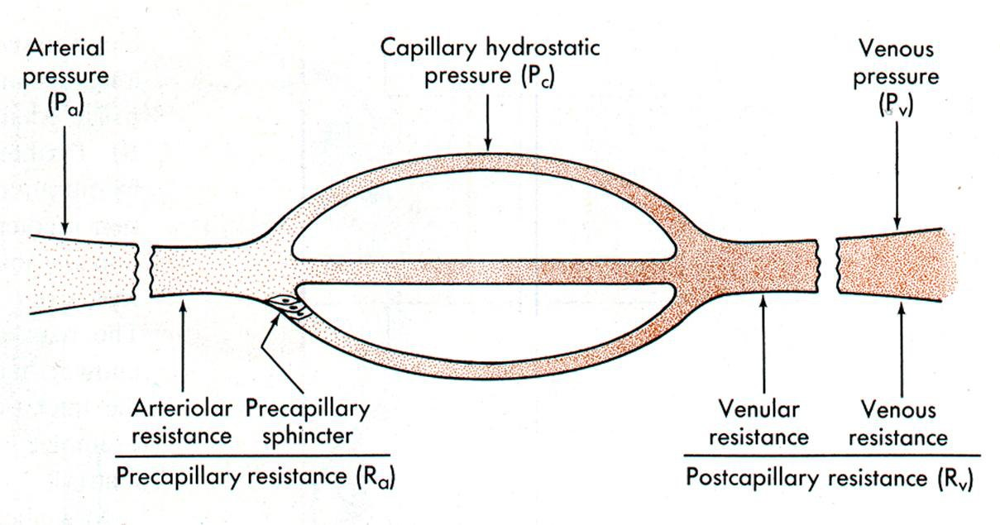


מערכת הלימפה (Lymphatic System)
- נימי לימפה עיוורים ברקמה קולטים את עודף הנוזל (~10% מהסינון, 2–4 ליטר/יום) ואת החלבונים שדלפו – זו הדרך היחידה של חלבון לחזור לדם. בלי זה πi היה עולה בהדרגה ומושך עוד נוזל.
- הזרימה: כיווץ שריר חלק בכלי הלימפה + "משאבת" שרירי השלד + מסתמים חד-כיווניים → צינור בית החזה → וריד תת-בריחי שמאלי.
- כשהלימפה חסומה (ניתוח, גידול, פילריאזיס) → לימפאדמה – בצקת עשירה בחלבון.
בצקת (Edema) חובה
"כל הפרה של אחד המרכיבים בהיפותזת סטרלינג שגורמת לעודף יציאת נוזלים מכלי הדם" – כשהפילטרציה עולה על יכולת הניקוז של הלימפה.
| מנגנון | דוגמאות |
|---|---|
| ↑ Pc (הידרוסטטי) | אי-ספיקת לב (↑לחץ ורידי), פקקת ורידים, הריון, עמידה ממושכת, עודף נוזלים |
| ↓ πc (אונקוטי) | היפואלבומינמיה: סינדרום נפרוטי, שחמת כבד, תת-תזונה (קוושיורקור), כוויות |
| ↑ חדירות (Kf, ↓σ) | דלקת, אלרגיה (היסטמין), כוויות, ספסיס – בצקת עשירה בחלבון |
| חסימת לימפה | לימפאדמה אחרי כריתת בלוטות, גידול, פילריאזיס |
9. בקרה עצבית ורפלקסים Autonomic Control & Reflexes
תרשים השליטה מההרצאה: שליטה על הספקת הדם = שליטה על פעולת הלב + שליטה על כלי הדם. בכל אחת יש בקרה מקומית (intrinsic – בתוך האיבר: פרנק-סטרלינג, מטבוליטים) ובקרה סיסטמית (extrinsic – עצבים והורמונים), והן משולבות. הדוגמה: במנוחה CO 2.5 ל'/דקה (במודל) ובמאמץ 10 – השריר מקבל פי 20, המוח אותו דבר, הכליה פחות.
9.1 מערכת העצבים האוטונומית (Autonomic Nervous System) חובה
| סימפתטי (Sympathetic) | פרה-סימפתטי (Parasympathetic) | |
|---|---|---|
| מוצא | חוט שדרה T1–T5 → גנגליונים סימפתטיים (כולל גנגליון stellate) → עצבים לבביים | גזע המוח (medulla) → עצב הוואגוס (X) → גנגליונים בלב |
| מוליך עצבי | Norepinephrine (ומהאדרנל: אדרנלין לדם) | Acetylcholine |
| רצפטור בלב | β1 אדרנרגי → Gs → ↑cAMP → PKA | M2 מוסקריני → Gi → ↓cAMP + פתיחת KACh |
| עצבוב | עליות וחדרים (גם SAN, AVN) | בעיקר SAN, AVN ועליות; עצבוב החדרים דל |
| כרונוטרופי (קצב) | ↑ (↑If, ↑ICa – שלב 4 תלול) | ↓ (היפרפולריזציה, ↓If, ↓ICa) |
| דרומוטרופי (הולכה ב-AVN) | ↑ (PR מתקצר) | ↓ (PR מתארך; חסם AV) |
| אינוטרופי (כיווציות) | ↑ עליות וחדרים (זרחון תעלות Ca, פוספולמבאן) | ↓ בעיקר בעליות; השפעה מועטה על החדרים |
| לוזיטרופי (הרפיה) | ↑ | – |
| כלי דם | כיווץ עורקיקים (α1) → ↑TPR; כיווץ ורידים → ↑החזר ורידי; β2 בשריר – הרחבה | כמעט ללא עצבוב של כלי דם (חוץ מכמה אזורים) |
| מי דומיננטי במנוחה | הפרה-סימפתטי. קצב SAN פנימי ~100; הוואגוס מוריד ל-~70. הסרת שניהם (לב מושתל) → ~100. | |
שלושת ה-"טרופים" חובה
- Chronotropic – קצב (chronos = זמן): פועל על SAN.
- Inotropic – כוח כיווץ (inos = סיב): פועל על המיוציטים (סידן).
- Dromotropic – מהירות הולכה (dromos = מסלול): פועל על AVN.
- (Lusitropic – מהירות הרפיה.)
אטרופין ופרופרנולול – הניסוי הפרמקולוגי
- Atropine – חוסם רצפטורים מוסקריניים = מעכב פרה-סימפתטי. נותנים אטרופין → HR עולה מ-~65 ל-~115 (חשיפת הטונוס הסימפתטי). אחריו פרופרנולול → יורד ל-~100 (הקצב הפנימי).
- Propranolol – חוסם β (לא סלקטיבי) = מעכב סימפתטי. נותנים פרופרנולול קודם → HR יורד מעט (65 → 50); ואז אטרופין → עולה ל-~100.
- המסקנה: ההשפעה של אטרופין לבד (+50) גדולה מזו של פרופרנולול לבד (−15) → הטונוס הוואגלי דומיננטי במנוחה. הסדר לא משנה – בסוף מגיעים לאותו קצב פנימי.


9.2 הרפלקסים חובה
רפלקס הברורצפטורים (Baroreceptor Reflex)
- חיישנים: רצפטורים למתיחה בסינוס הקרוטיד (עצב IX, גלוסופרינגיאלי) ובקשת האאורטה (עצב X, ואגוס).
- מרכז: המדולה (NTS → מרכז ואזומוטורי ומרכז ואגלי).
- ↑ לחץ דם → ↑מתיחה → ↑ירי → ↑ואגוס, ↓סימפתטי → ↓HR, ↓כיווציות, הרחבת כלי דם → הלחץ יורד.
- ↓ לחץ דם (עמידה, דימום) → ↓ירי → ↑סימפתטי, ↓ואגוס → ↑HR, ↑כיווציות, כיווץ עורקיקים וורידים → הלחץ עולה.
- הרפלקס המהיר ביותר (שניות) – בקרה רגעית. מתרגל (reset) ללחץ חדש תוך ימים, ולכן לא שולט בלחץ לטווח ארוך (זו הכליה).
- הרגישות מרבית סביב 100 mmHg; עקומת ה-S בגרף HR מול לחץ.
רפלקס ביינברידג' (Bainbridge Reflex)
- חיישנים: רצפטורי מתיחה בעליות (ובכניסת הוורידים הגדולים).
- ↑ לחץ/נפח בעלייה (עירוי, ↑החזר ורידי) → רפלקס שמגביר את הדופק (↓ואגוס, ↑סימפתטי ל-SAN). המטרה: "לפנות" את העודף במהירות ולא לתת לדם להצטבר בוורידים.
- בנוסף, מתיחת העליות משחררת ANP (Atrial Natriuretic Peptide) → שיתון ונטריאורזיס בכליה, הרחבת כלי דם, עיכוב רנין-אלדוסטרון → ירידת נפח הדם.
- ביינברידג' דומיננטי כשנפח הדם גדול; הברורצפטורים דומיננטיים כשנפח הדם קטן. (בעירוי: העליות נמתחות → ביינברידג' מעלה HR; אבל הלחץ העורקי עולה → ברורצפטורים מורידים HR. מי מנצח תלוי בנפח ההתחלתי.)
רפלקס הכימורצפטורים (Chemoreceptor Reflex)
- חיישנים: גופיפי הקרוטיד והאאורטה (היקפיים) – רגישים ל-↓PO₂, ↑PCO₂, ↓pH.
- היפוקסיה → השפעה ראשונית ישירה: גירוי המרכז הוואגלי → ↓HR וכיווץ כלי דם היקפי (חיסכון בחמצן). אבל במקביל: ↑נשימה → מתיחת הריאות + ירידת PCO₂ → עיכוב המרכז הוואגלי → ↑HR.
- התוצאה נטו בבני אדם שנושמים חופשי: ↑HR (ההשפעה המשנית דרך הנשימה גוברת). אם הנשימה מעוכבת (צלילה, חנק) – ברדיקרדיה.
- בגרף מההרצאה: ירידה בסטורציה → ירידה ב-HR (ההשפעה הישירה בניסוי מבוקר).


9.3 השפעת הנשימה: הפרעת קצב סינוס נשימתית (Sinus Arrhythmia)
- בשאיפה (inspirium) – הדופק עולה; בנשיפה (expirium) – הדופק יורד. תופעה תקינה, בולטת בצעירים ובספורטאים (טונוס ואגלי גבוה).
- מנגנונים: (1) מרכז הנשימה במדולה "מקרין" עיכוב על המרכז הוואגלי בשאיפה; (2) מתיחת הריאות → רצפטורים → עיכוב ואגלי; (3) ↓לחץ תוך-חזי בשאיפה → ↑החזר ורידי → מתיחת העליות → ביינברידג' → ↑HR; (4) כמה פעימות אחר כך ↑CO → ↑לחץ עורקי → ברורצפטורים → ↓HR (מתאים לנשיפה).
- באק"ג: מרווחי RR מתקצרים ומתארכים במחזוריות של הנשימה, עם גלי P תקינים.


10. בקרה על קצב הלב ועל נפח הפעימה Regulation of HR & SV
CO = SV × HR. HR נקבע ע"י הקוצב ונמצא תחת השפעת האוטונומי (ראינו בפרק 9). SV תלוי ב-preload, afterload ו-inotropy, ואפשר לשנות אותו בשתי דרכים: בקרה מקומית (Intrinsic) – מנגנונים בתוך שריר הלב עצמו, ובקרה סיסטמית (Extrinsic) – עצבים, הורמונים וגזים בדם.
10.1 בקרה מקומית על SV (Intrinsic Regulation) חובה
1. עקומת פרנק-סטרלינג (תלוית אורך)
- ↑Preload → ↑SV, עד גבול מתיחת הסיבים.
- ↑Afterload → ↓SV – אבל אחרי כמה פעימות הנפח השאריתי שגדל מעלה את ה-preload, פרנק-סטרלינג מפצה ומגיעים לשיווי משקל חדש (SV כמעט חוזר, על חשבון EDV גבוה יותר).
- ↑כיווציות מסיטה את העקומה למעלה-שמאלה → ↑SV – אבל שימוש בחומרים חיצוניים זו כבר בקרה סיסטמית.
2. בקרה תלוית קצב (Rate-Induced Regulation / Bowditch staircase)
- ככל שמעלים את קצב הלב – גדל הכוח שהלב יוצר (treppe / staircase). באיור: מעבר מ-20 ל-63 גירויים/דקה – הכוח עולה בהדרגה.
- ההסבר – צימוד עירור-כיווץ: יותר AP ליחידת זמן → יותר סידן נכנס לתא, ופחות זמן ל-NCX להוציא אותו → ↑סידן תוך-תאי (ב-SR ובציטוזול) → כיווץ חזק יותר. גם זרם הסידן בכל AP גדל בקצבים גבוהים (הגרף: הזרם בפעימה 7 גדול מפעימה 1).
- זו בקרה מקומית – נצפית גם בלב מבודד.
סיכום הבקרה המקומית בדוגמה: פעימה חדרית מוקדמת ופעימת הפיצוי אחריה
- הפעימה המוקדמת (A): הגיעה לפני שהחדר הספיק להתמלא → EDV נמוך → לפי פרנק-סטרלינג SV ולחץ נמוכים (באיור: לחץ A קטן). גם הסידן ב-SR לא הספיק להתמלא.
- הפעימה הבאה (B): אחרי ההפסקה המפצה – זמן מילוי ארוך → EDV גבוה (preload ↑) + הסידן הצטבר (post-extrasystolic potentiation) → SV ולחץ גבוהים מהרגיל (באיור: B גבוה מ-C הרגיל).
- זה בדיוק "הלב מרגיש את הדפיקה החזקה אחרי שהוא 'מדלג'".
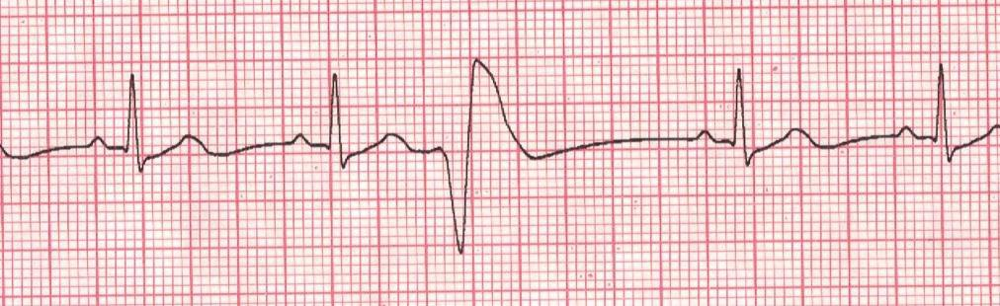


10.2 בקרה סיסטמית על SV (Extrinsic Regulation)
בקרה עצבית
- סימפתטי דרך רצפטורים אדרינרגיים (β1) מגביר כיווציות של העלייה ושל החדר. בגרף: גירוי גנגליון stellate → שיא לחץ גבוה יותר ו-dP/dt (קצב עליית הלחץ = מדד לכיווציות) תלול יותר.
- פרה-סימפתטי: גירוי ואגלי מוריד מעט את הלחץ ואת dP/dt – בעיקר דרך העליות ודרך האטה; ההשפעה הישירה על החדר קטנה.
- מנגנון: זרחון חלבונים הקשורים בהכנסה ובהוצאה המהירה של סידן (פרק 6.4). בניסוי ה-isoproterenol (אגוניסט β): ↑ריכוז → ↑זרם סידן (אות aequorin) → ↑כוח, וגם כיווץ קצר יותר.
בקרה כימית – הורמונים חובה
| הורמון | השפעה |
|---|---|
| קטכולאמינים (מדולת האדרנל: אדרנלין, נוראדרנלין) | כמו הסימפתטי אבל דרך הדם, איטי יותר ונמשך יותר: ↑HR, ↑כיווציות, ↑הולכה (β1); כיווץ כלי דם (α) / הרחבה בשריר (β2) |
| גלוקוקורטיקואידים (קורטקס האדרנל) | "מאפשרים" (permissive) – שומרים על תגובת הלב והכלים לקטכולאמינים |
| הורמוני בלוטת התריס (T3/T4) | ↑מספר רצפטורי β, ↑סינתזת מיוזין מהיר ו-SERCA → ↑HR, ↑כיווציות, ↑CO. היפרתירואידיזם: טכיקרדיה, פרפור עליות, אי-ספיקת לב עם תפוקה גבוהה. היפותירואידיזם – ההפך. |
| אינסולין | אינוטרופי חיובי (ישיר, לא רק דרך גלוקוז) |
| גלוקגון | ↑cAMP דרך רצפטור משלו → אינוטרופי וכרונוטרופי חיובי (שימוש קליני בהרעלת חוסמי β) |
| הורמון גדילה (GH) | ↑כיווציות, היפרטרופיה (אקרומגליה – קרדיומיופתיה) |
| ANP (מהעליות) | לא על הלב ישירות: ↓נפח דם (שיתון), הרחבת כלים → ↓preload ו-↓afterload |
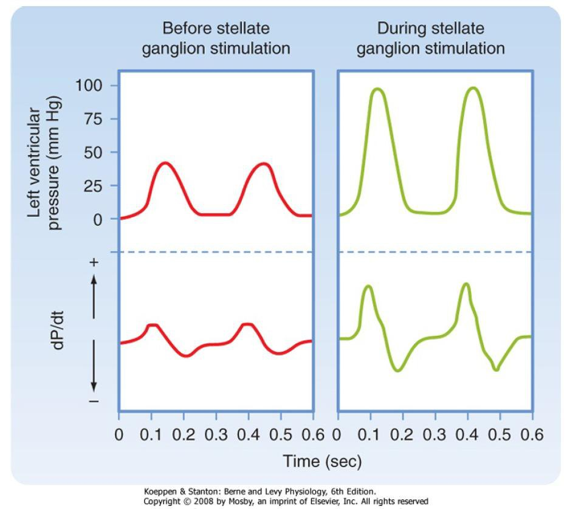
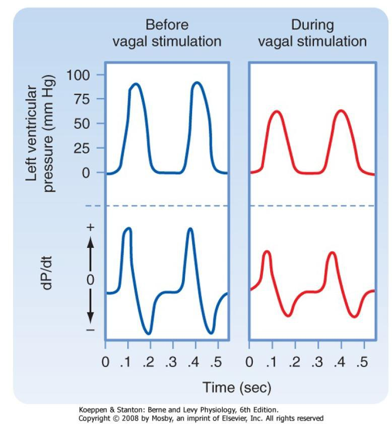
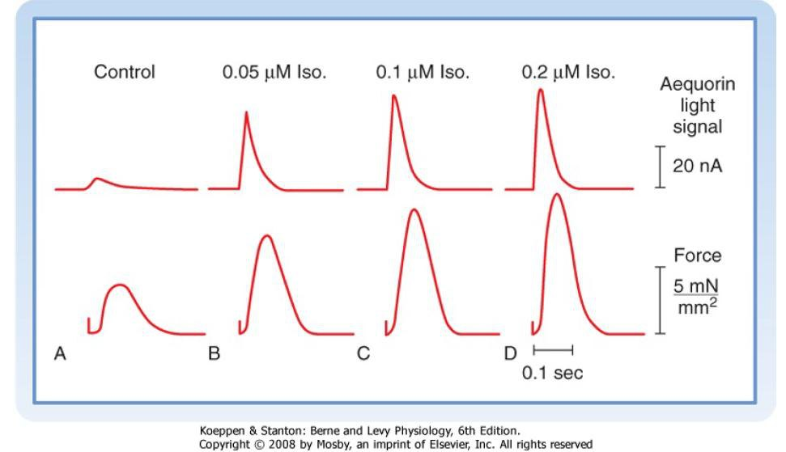


10.3 גזים בדם וחמצת חובה
חמצן – אפקט דו-שלבי (Biphasic Effect of O₂ / Hypoxia)
- היפוקסיה קלה → משפרת את ביצועי הלב. המנגנון: גירוי כימורצפטורים → ↑סימפתטי וקטכולאמינים; שחרור מטבוליטים מרחיבי כלים (אדנוזין) → ↑זרימה כלילית. התוצאה: ↑HR, ↑כיווציות, ↑CO.
- היפוקסיה קשה → מדכאת את הלב. אין מספיק ATP למשאבות הסידן ולמיוזין; הצטברות H⁺ ולקטט; ↓כיווציות, הפרעות קצב, ובסוף דום לב.
- "דו-שלבי": העקומה עולה ואז צונחת.
פחמן דו-חמצני וחמצת (Acidosis)
- ↑PCO₂ → CO₂ + H₂O → H₂CO₃ → H⁺ → חמצת (pH נמוך). גם חמצת מטבולית (לקטט, קטונים) עושה אותו דבר.
- לחמצת אפקט ישיר המדכא את ביצועי הלב (אינוטרופי שלילי) בשני מנגנונים:
- ↓ כמות הסידן המשתחררת מה-SR (H⁺ פוגע ב-RyR וב-SERCA, מתחרה על אתרי קשירה).
- ↓ קישור הסידן לטרופונין – H⁺ מתחרה עם Ca²⁺ על Troponin C → פחות גשרים לכל ריכוז סידן.
- בנוסף: חמצת מרחיבה עורקיקים (↓TPR) ומעלה אשלגן חוץ-תאי → הפרעות קצב. בקליניקה: בהחייאה, חמצת קשה מורידה את התגובה לקטכולאמינים.

10.4 האינטגרציה: CO, TPR, MAP
| מצב | HR | SV | CO | TPR | MAP | המנגנון |
|---|---|---|---|---|---|---|
| מאמץ גופני | ↑↑ | ↑ | ↑↑ (עד 20–25 ל') | ↓ (הרחבה בשריר ע"י מטבוליטים) | ↑ קל (סיסטולי) | סימפתטי + ↑החזר ורידי (משאבת שרירים) + בקרה מקומית בשריר |
| דימום / עמידה | ↑ | ↓ (↓preload) | ↓ | ↑ | נשמר (בתחילה) | ברורצפטורים → סימפתטי: כיווץ עורקיקים וורידים, ↑HR, ↑כיווציות |
| עירוי נוזלים | ↑ (ביינברידג') | ↑ (↑preload) | ↑ | ↓ (ברורצפטורים) | ↑ | ביינברידג' + ANP; הכליה מפנה את העודף |
| חוסם β | ↓ | ↓ (↓כיווציות), ↑EDV | ↓ | ↑ רפלקסיבית | ↓ | חסימת סימפתטי ללב |
| מרחיב כלי דם (ניטרופרוסיד) | ↑ רפלקסיבית | ↑ (↓afterload) | ↑ | ↓↓ | ↓ | ↓TPR → ברורצפטורים מפצים חלקית |
| היפרתירואידיזם | ↑ | ↑ | ↑ | ↓ | ↑ סיסטולי, לחץ דופק רחב | ↑רצפטורי β, ↑מטבוליזם |
11. פינה קלינית – המקרים מההרצאות Clinical Corner
פרפור עליות (Atrial Fibrillation)
חולה במיון עם דופק מהיר ולא סדיר. אק"ג: אין גלי P, QRS צרים, מרווחי RR לא סדירים לחלוטין. פיזיולוגיה: מוקדים/מעגלים רבים בעליות; ה-AVN מעביר חלק מהם – "תגובה חדרית מהירה". אובדן ה-atrial kick → ↓מילוי (~20%). טיפול: חוסם β (האטת AVN), חוסם K⁺ (הארכת ERP – סוטלול), היפוך חשמלי (כולם רפרקטוריים יחד, SAN חוזר ראשון).
דיגוקסין (Digoxin)
מעכב Na⁺/K⁺-ATPase → ↑Na⁺ תוך-תאי → NCX מוציא פחות Ca²⁺ → ↑Ca²⁺ ב-SR → אינוטרופי חיובי. במקביל מגביר טונוס ואגלי → מאט AVN (שימושי בפרפור עליות עם אי-ספיקה). טווח טיפולי צר – היפוקלמיה מגבירה רעילות (פחות K⁺ מתחרה על המשאבה).
אי-ספיקת לב ו-S3
↓כיווציות → ESPVR שטוח → ↑ESV → ↑EDV (הלב מתרחב) → נשאר על החלק השטוח של פרנק-סטרלינג. ↑לחץ בעלייה ובוורידים → ↑Pc → בצקת ריאות / רגליים. S3 בתחילת הדיאסטולה (דם נשפך לחדר מורחב). הפיצוי הסימפתטי (↑HR, ↑TPR) מעלה afterload ומחמיר – לכן חוסמי β ומרחיבי כלים עוזרים בטווח הארוך.
היצרות מסתם אאורטלי (Aortic Stenosis)
↑afterload קבוע → הלב בונה לחץ גבוה מאוד (מפל לחץ "gradient" בין החדר לאאורטה) → אוושה סיסטולית (ברנולי: מהירות גבוהה בהיצרות) → היפרטרופיה → חדר קשיח (EDPVR תלול, S4) → לחץ דופק צר, סינקופה במאמץ.
היפרתירואידיזם
↑רצפטורי β, ↑מטבוליזם → טכיקרדיה, לחץ דופק רחב, פרפור עליות, אי-ספיקה עם תפוקה גבוהה, רעד, הזעה, אקסופתלמוס, ירידה במשקל. חוסמי β מקלים על התסמינים הלבביים.
בצקת – לחשוב סטרלינג
רגליים נפוחות בערב (↑Pc מעמידה), בצקת כללית בסינדרום נפרוטי (↓πc), נפיחות אדומה חמה בדלקת (↑Kf), זרוע נפוחה אחרי כריתת בלוטות (חסימת לימפה). בכולם: סינון > ספיגה + ניקוז לימפתי.
12. דף נוסחאות Formula Sheet
5–6 ל'/דקה = 70 מ"ל × 70
70 = 120 − 50
~60%
זרימה = הפרש לחץ / התנגדות
פואזיי – הרדיוס בחזקת 4
מהירות הפוכה לשטח החתך
TPR = (MAP − CVP) / CO
PP = Ps − Pd
היענות; ורידים ×20 מעורקים
ברנולי – מהירות ↑ ⇒ לחץ ↓
פיק – דיפוזיה
סטרלינג – פילטרציה
לחץ אונקוטי
≤ 0.40 ש'
מדד הכיווציות
13. כל הטריקים במקום אחד Memory Aids
- סדר ההולכה: SA → AV → His → Purkinje – "Sתם Aני Hולך Pה".
- מהיר = Na, איטי = Ca. ה-plateau = Ca נכנס מול K יוצא.
- ERP = אין תגובה. RRP = רק גירוי חזק.
- If "מצחיק" כי נפתח בהיפרפולריזציה; סימפתטי ↑, ואגוס ↓.
- P = פרוזדורים, QRS = חדרים נדלקים, T = חדרים נכבים, PR = פקק ב-AVN (0.12–0.20), ST = שקט.
- פרפור עליות: אין P + לא סדיר לחלוטין. חסם AV 1: PR > 0.20. חסם AV 2: P בלי QRS.
- מסתמים: מאאמ – מיטרלי נסגר (S1), אאורטלי נפתח, אאורטלי נסגר (S2), מיטרלי נפתח. בין "סגור-סגור" – איזו-וולומטרי.
- וויגרס מהבוחן: A = מיטרלי נסגר, B = אאורטלי נפתח, C = אאורטלי נסגר, D = מיטרלי נפתח; 1 = IVC, 2 = פליטה, 3 = IVR, 4–5 מילוי, 6 = סיסטולת עלייה.
- S3 = שפיכה לחדר רפוי (אי-ספיקה, תחילת דיאסטולה). S4 = עלייה דוחפת לחדר קשיח (סוף דיאסטולה).
- P-A-C: Preload ↑SV, Afterload ↓SV, Contractility ↑SV.
- PV loop מהבוחן: A = מיטרלי נפתח (ESV), C = מיטרלי נסגר (EDV = preload), D = אאורטלי נפתח, E = afterload, F = אאורטלי נסגר. SV = D–F (או C–A).
- Preload מזיז ימינה, Afterload למעלה, Inotropy שמאלה ומשנה שיפוע ESPVR. רק אינוטרופיה משנה את השיפוע.
- פרנק-סטרלינג: יותר נכנס – יותר יוצא. EDPVR = פסיבי = היענות; ESPVR = אקטיבי = כיווציות.
- r⁴: הכפלת רדיוס = פי 16 זרימה. השליטה = עורקיקים.
- MAP = דיאסטולי + שליש דופק ≈ 93. MAP = CO × TPR כמו V = I × R.
- סטרלינג: Pc דוחף החוצה (35→15), πc מושך פנימה (25). 90% חוזר, 10% לימפה. בצקת = ↑Pc / ↓אלבומין / ↑חדירות / חסימת לימפה.
- Chrono = קצב, Ino = כוח, Dromo = הולכה. ואגוס דומיננטי במנוחה (אטרופין +50, פרופרנולול −15).
- בארו הופכי (לחץ ↑ → HR ↓), ביינברידג' ישר (נפח עלייה ↑ → HR ↑ + ANP), כימו ישיר ↓HR אבל דרך הנשימה ↑HR.
- שאיפה – דופק עולה; נשיפה – יורד.
- חמצן דו-שלבי: קצת היפוקסיה משפרת, הרבה מדכאת. חמצת חוסמת סידן (שחרור + טרופונין).
לתרגול – שאלות מהבחנים ושאלות נוספות → ⚡ כל מה שחייב לדעת לבוחן ואיך לזכור
נבנה מרשימות המושגים של הקורס, ממצגות ההרצאות (פרופ' בן אסא, 2026), מבוחן הבוקר (04.12) ומבוחן 1. האיורים מהמצגות (Guyton & Hall; Koeppen & Stanton, Berne & Levy) – לשימוש לימודי אישי בלבד. ההסברים נכתבו לצורכי לימוד ואינם תחליף לחומר הקורס.